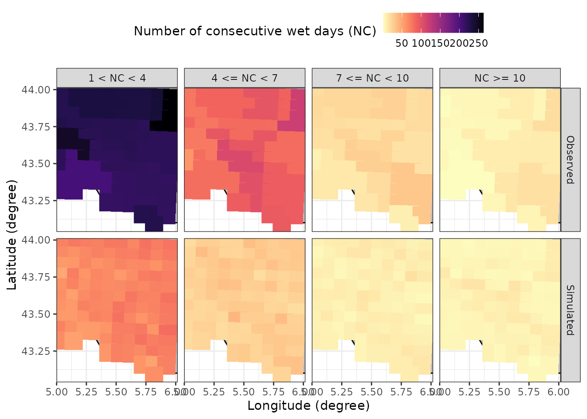

Introduction
This vignette provides a step-by-step guide on running a stochastic
weather generator using the MSTWeatherGen package. From
loading the historical weather data and spatial coordinates, performing
parameter estimation, to running simulations and generating validation
plots. This guide covers all you need to get started with
MSTWeatherGen, but does not provide the technical details
of the methods considered.
Data
Toy data
For our simulation, we will need historical weather data of multiple variables and geographic coordinates. Below, we load these datasets stored within the package.
The data considered here is the meteorological dataset SAFRAN, developed by Météo-France. We only consider a small region in the south of France for the period 2017-2021. We consider 3 variables: precipitation, wind, and maximum temperature.
Note on data needed for MSTWeatherGen
MSTWeatherGen is designed for multivariate and
spatio-temporal weather generation. Therefore, the meteorological data
to be used (here data) needs to be multiple variables (at
least two variables) defined in a spatial domain (characterized by
coordinates) and a temporal domain (defined by
dates). Thus, the data needs to be in three dimensions
(timelocationvariable).
Alongside the meteorological data, the user needs to provide a two
column matrix of coordinates of each locations considered. Each row
i of this matrix (coordinates[i,]) corresponds
to the x and y coordinates of the datum data[,i,]. Finally,
the user needs also to provide the time (dates here)
corresponding to each point in the first dimension of
data.
Another important point about the meteorological data is the
precipitation variable. Being a special variable in the estimation and
simulation (as it has many zeros), if it is considered, it has to be the
first variable in the meteorological data. If the user wants, one can
also provide the names of the variables considered (here
names).
Estimation
With the data loaded, we proceed to estimate the parameters required
for simulation. This involves determining weather types, computing
transition probabilities between weather types, estimating the
transformation functions of the variables into normal distribution, and
finally estimating the parameters of the multivariate spatio-temporal
covariance function, all using the MSTWeatherGen_Estim
function.
Before heading to the estimation, we will detail some important
considerations that will help the user use the
MSTWeatherGen_Estim function. First, if the data exhibit
seasonality, it has to be handled somehow. Here, propose to treat each
season separately meaning that the parameters of the model (weather
types, transformation functions, and covariance function) are estimated
at each season. The seasons are up to the user to define using the
following format:
seasons <- list(
s1 = list(min_day = 1, max_day = 29, min_month = 12, max_month = 2),
s2 = list(min_day = 1, max_day = 31, min_month = 3, max_month = 5),
s3 = list(min_day = 1, max_day = 31, min_month = 6, max_month = 8),
s4 = list(min_day = 1, max_day = 30, min_month = 9, max_month = 11)
)We can also provide the names of each season, to be used later for the validation plots:
names_seasons = c("DJF", "MAM", "JJA", "SON")If the considered data does not exhibit seasonality one can use the
whole period to estimate the parameters. To do that, one needs to fix
the argument by_season of the
MSTWeatherGen_Estim as False.
All the data being ready, we can now proceed to the estimation of the
parameters using MSTWeatherGen_Estim function.
names_weather_types = names
swg = MSTWeatherGen_Estim(data = data, seasons = seasons,dates = dates, names = names, by_season = T, scale = T,
precipitation = T,names_weather_types = names_weather_types,
coordinates= coordinates, max_it=100, tmax=1, n1=3, n2=3)
#> ---Final iteration--- 27
#> --Singular Value-- 2164.916 -- Local Percent -- 70.26529 %
#> ---Final iteration--- 34
#> --Singular Value-- 412.6398 -- Local Percent -- 45.76965 %
#> ---Final iteration--- 1
#> --Singular Value-- 144.612 -- Local Percent -- 56.13031 %
#>
#> -----Execution Time----- 2.952
#> Nelder-Mead direct search function minimizer
#> function value for initial parameters = 137.498584
#> Scaled convergence tolerance is 2.04889e-06
#> Stepsize computed as 0.100000
#> BUILD 3 137.534475 137.483541
#> Nelder-Mead direct search function minimizer
#> EXTENSION 5 137.498584 137.171996
#> function value for initial parameters = 840.657016
#> Scaled convergence tolerance is 1.25268e-05
#> Stepsize computed as 0.100000
#> EXTENSION 7 137.483541 136.447626
#> BUILD 3 840.765597 840.611500
#> EXTENSION 9 137.171996 115.499672
#> EXTENSION 5 840.657016 839.669532
#> REFLECTION 11 136.447626 93.498874
#> HI-REDUCTION 13 130.857143 93.498874
#> EXTENSION 7 840.611500 837.478171
#> HI-REDUCTION 15 122.896231 93.498874
#> REFLECTION 17 115.499672 66.369290
#> EXTENSION 9 839.669532 768.208721
#> HI-REDUCTION 19 102.760656 66.369290
#> REFLECTION 11 837.478171 687.893996
#> REFLECTION 21 93.498874 51.712460
#> HI-REDUCTION 13 820.319814 687.893996
#> HI-REDUCTION 23 78.741403 51.712460
#> HI-REDUCTION 15 794.432656 687.893996
#> HI-REDUCTION 25 68.894723 51.712460
#> REFLECTION 17 768.208721 659.608160
#> HI-REDUCTION 19 720.713664 659.608160
#> LO-REDUCTION 27 66.369290 51.712460
#> HI-REDUCTION 21 688.464622 659.608160
#> HI-REDUCTION 29 58.132791 51.712460
#> REFLECTION 23 687.893996 658.442180
#> HI-REDUCTION 31 54.427472 51.712460
#> HI-REDUCTION 25 659.608160 656.216700
#> LO-REDUCTION 33 52.620820 51.712460
#> LO-REDUCTION 27 658.442180 650.697402
#> HI-REDUCTION 35 51.929025 51.712460
#> HI-REDUCTION 29 656.216700 647.452817
#> HI-REDUCTION 37 51.753822 51.712460
#> HI-REDUCTION 39 51.748538 51.712460
#> LO-REDUCTION 31 650.697402 647.452817
#> HI-REDUCTION 41 51.717332 51.712460
#> HI-REDUCTION 33 648.268332 647.452817
#> HI-REDUCTION 43 51.717125 51.712460
#> HI-REDUCTION 35 647.638057 647.452817
#> LO-REDUCTION 45 51.712527 51.711557
#> HI-REDUCTION 37 647.594296 647.452817
#> LO-REDUCTION 39 647.503462 647.452817
#> EXTENSION 41 647.498230 647.379570
#> REFLECTION 47 51.712460 51.711220
#> REFLECTION 49 51.711557 51.710760
#> REFLECTION 51 51.711220 51.710160
#> REFLECTION 53 51.710760 51.710127
#> REFLECTION 55 51.710160 51.709272
#> LO-REDUCTION 43 647.452817 647.379570
#> LO-REDUCTION 57 51.710127 51.709272
#> REFLECTION 59 51.709275 51.709221
#> EXTENSION 45 647.398920 647.245222
#> HI-REDUCTION 61 51.709272 51.708880
#> EXTENSION 63 51.709221 51.708310
#> LO-REDUCTION 47 647.379570 647.245222
#> LO-REDUCTION 65 51.708880 51.708310
#> EXTENSION 49 647.258055 646.983043
#> EXTENSION 67 51.708559 51.707660
#> EXTENSION 51 647.245222 646.808841
#> EXTENSION 53 646.983043 646.202286
#> LO-REDUCTION 69 51.708310 51.707660
#> EXTENSION 55 646.808841 645.349204
#> EXTENSION 71 51.707666 51.707204
#> LO-REDUCTION 57 646.202286 645.349204
#> LO-REDUCTION 73 51.707660 51.707197
#> REFLECTION 59 645.546334 645.037507
#> LO-REDUCTION 75 51.707293 51.707197
#> EXTENSION 61 645.349204 644.038876
#> LO-REDUCTION 77 51.707204 51.707195
#> LO-REDUCTION 63 645.037507 644.038876
#> HI-REDUCTION 79 51.707197 51.707168
#> EXTENSION 65 644.423837 642.667267
#> LO-REDUCTION 81 51.707195 51.707168
#> LO-REDUCTION 67 644.038876 642.667267
#> LO-REDUCTION 83 51.707178 51.707168
#> REFLECTION 69 643.342410 642.502602
#> LO-REDUCTION 85 51.707176 51.707168
#> EXTENSION 71 642.667267 641.431723
#> REFLECTION 87 51.707173 51.707167
#> LO-REDUCTION 73 642.502602 641.431723
#> HI-REDUCTION 75 641.754719 641.431723
#> HI-REDUCTION 77 641.582267 641.431723
#> LO-REDUCTION 79 641.479050 641.367976
#> Exiting from Nelder Mead minimizer
#> 89 function evaluations used
#> Nelder-Mead direct search function minimizer
#> function value for initial parameters = 860.451448
#> Scaled convergence tolerance is 1.28217e-05
#> Stepsize computed as 0.100000
#> BUILD 3 860.574091 860.400031
#> EXTENSION 5 860.451448 859.335708
#> HI-REDUCTION 81 641.431723 641.355692
#> EXTENSION 7 860.400031 856.855458
#> HI-REDUCTION 83 641.367976 641.355692
#> EXTENSION 9 859.335708 769.995702
#> REFLECTION 11 856.855458 639.799523
#> LO-REDUCTION 85 641.365618 641.347619
#> HI-REDUCTION 13 837.058719 639.799523
#> HI-REDUCTION 15 805.232688 639.799523
#> HI-REDUCTION 87 641.355692 641.347483
#> REFLECTION 17 769.995702 439.713375
#> HI-REDUCTION 89 641.347970 641.347483
#> HI-REDUCTION 19 698.451662 439.713375
#> REFLECTION 21 639.799523 314.897684
#> HI-REDUCTION 91 641.347619 641.346354
#> HI-REDUCTION 23 534.977985 314.897684
#> HI-REDUCTION 93 641.347483 641.346349
#> HI-REDUCTION 25 460.144269 314.897684
#> HI-REDUCTION 95 641.346354 641.346181
#> LO-REDUCTION 27 439.713375 314.897684
#> HI-REDUCTION 97 641.346349 641.346115
#> HI-REDUCTION 29 362.130420 314.897684
#> REFLECTION 99 641.346181 641.346113
#> HI-REDUCTION 31 327.920337 314.897684
#> Exiting from Nelder Mead minimizer
#> 101 function evaluations used
#> HI-REDUCTION 33 319.424850 314.897684
#> HI-REDUCTION 35 316.692268 313.562565
#> LO-REDUCTION 37 314.897684 313.562565
#> HI-REDUCTION 39 313.937062 313.562565
#> REFLECTION 41 313.825898 313.556347
#> EXTENSION 43 313.562565 313.183306
#> EXTENSION 45 313.556347 312.587794
#> REFLECTION 47 313.183306 312.092917
#> REFLECTION 49 312.587794 311.578993
#> EXTENSION 51 312.092917 310.789895
#> EXTENSION 53 311.578993 308.143322
#> EXTENSION 55 310.789895 304.610766
#> REFLECTION 57 308.143322 300.940751
#> REFLECTION 59 304.610766 294.258220
#> HI-REDUCTION 61 300.940751 294.258220
#> HI-REDUCTION 63 299.755985 294.258220
#> LO-REDUCTION 65 298.019733 294.258220
#> LO-REDUCTION 67 294.757299 293.653609
#> HI-REDUCTION 69 294.258220 293.653609
#> LO-REDUCTION 71 294.095116 293.653609
#> HI-REDUCTION 73 293.856634 293.653609
#> LO-REDUCTION 75 293.822029 293.653609
#> LO-REDUCTION 77 293.675984 293.645675
#> HI-REDUCTION 79 293.653609 293.645675
#> LO-REDUCTION 81 293.646656 293.641698
#> HI-REDUCTION 83 293.645675 293.640803
#> HI-REDUCTION 85 293.641698 293.640803
#> LO-REDUCTION 87 293.641217 293.640656
#> HI-REDUCTION 89 293.640803 293.640446
#> HI-REDUCTION 91 293.640656 293.640390
#> LO-REDUCTION 93 293.640446 293.640319
#> HI-REDUCTION 95 293.640390 293.640319
#> HI-REDUCTION 97 293.640335 293.640319
#> Exiting from Nelder Mead minimizer
#> 99 function evaluations used
#> Nelder-Mead direct search function minimizer
#> function value for initial parameters = 213.419061
#> Scaled convergence tolerance is 3.18019e-06
#> Stepsize computed as 0.100000
#> BUILD 3 213.419721 213.418801
#> EXTENSION 5 213.419061 213.408211
#> Nelder-Mead direct search function minimizer
#> EXTENSION 7 213.418801 213.369446
#> function value for initial parameters = 425.136428
#> Scaled convergence tolerance is 6.33503e-06
#> Stepsize computed as 0.100000
#> EXTENSION 9 213.408211 207.169607
#> BUILD 3 425.137695 425.135929
#> REFLECTION 11 213.369446 192.847900
#> HI-REDUCTION 13 212.621355 192.847900
#> EXTENSION 5 425.136428 425.115635
#> HI-REDUCTION 15 210.410565 192.847900
#> REFLECTION 17 207.169607 165.091077
#> EXTENSION 7 425.135929 425.041471
#> HI-REDUCTION 19 199.662894 165.091077
#> REFLECTION 21 192.847900 161.326881
#> EXTENSION 9 425.115635 413.686806
#> HI-REDUCTION 23 178.777228 161.326881
#> REFLECTION 11 425.041471 389.070284
#> HI-REDUCTION 13 423.627774 389.070284
#> HI-REDUCTION 15 419.544744 389.070284
#> HI-REDUCTION 25 168.087370 161.326881
#> REFLECTION 17 413.686806 346.130926
#> HI-REDUCTION 19 400.536020 346.130926
#> HI-REDUCTION 27 165.091077 161.326881
#> LO-REDUCTION 21 389.070284 346.130926
#> HI-REDUCTION 29 162.161201 160.025942
#> HI-REDUCTION 23 371.962273 346.130926
#> HI-REDUCTION 31 161.326881 158.378052
#> LO-REDUCTION 25 347.314622 336.734166
#> HI-REDUCTION 33 160.025942 156.083170
#> REFLECTION 27 346.130926 336.039270
#> LO-REDUCTION 35 158.378052 156.083170
#> HI-REDUCTION 29 339.902562 336.039270
#> HI-REDUCTION 37 156.867674 156.083170
#> HI-REDUCTION 31 337.595389 336.039270
#> LO-REDUCTION 39 156.152221 156.083170
#> LO-REDUCTION 33 336.734166 336.039270
#> HI-REDUCTION 41 156.140924 156.083170
#> LO-REDUCTION 35 336.372800 336.039270
#> REFLECTION 43 156.089566 156.060349
#> EXTENSION 37 336.061734 335.358419
#> EXTENSION 45 156.083170 156.012079
#> LO-REDUCTION 39 336.039270 335.358419
#> REFLECTION 47 156.060349 155.993005
#> EXTENSION 41 335.679226 334.582290
#> EXTENSION 49 156.012079 155.914152
#> EXTENSION 43 335.358419 333.283894
#> EXTENSION 51 155.993005 155.776237
#> EXTENSION 45 334.582290 332.611091
#> EXTENSION 53 155.914152 155.678746
#> REFLECTION 47 333.283894 331.402977
#> EXTENSION 55 155.776237 155.123677
#> HI-REDUCTION 49 332.611091 331.402977
#> LO-REDUCTION 57 155.678746 155.123677
#> EXTENSION 51 332.172860 330.008604
#> EXTENSION 59 155.238789 153.831020
#> EXTENSION 53 331.402977 328.538211
#> LO-REDUCTION 61 155.123677 153.831020
#> EXTENSION 55 330.008604 323.064957
#> EXTENSION 63 154.177748 150.578924
#> LO-REDUCTION 57 328.538211 323.064957
#> LO-REDUCTION 65 153.831020 150.578924
#> REFLECTION 67 150.965458 147.835919
#> REFLECTION 59 323.915943 320.164568
#> EXTENSION 69 150.578924 144.108116
#> HI-REDUCTION 61 323.064957 320.164568
#> HI-REDUCTION 71 147.947694 144.108116
#> EXTENSION 63 321.261071 316.713124
#> HI-REDUCTION 65 320.164568 316.713124
#> HI-REDUCTION 67 318.774276 316.713124
#> LO-REDUCTION 73 147.835919 144.108116
#> LO-REDUCTION 75 144.975141 143.028730
#> HI-REDUCTION 77 144.108116 143.028730
#> REFLECTION 79 143.795382 143.025091
#> REFLECTION 81 143.028730 142.483810
#> LO-REDUCTION 83 143.025091 142.483810
#> HI-REDUCTION 85 142.602488 142.483810
#> REFLECTION 87 142.570906 142.467419
#> HI-REDUCTION 89 142.483810 142.354166
#> LO-REDUCTION 69 318.133541 316.644615
#> LO-REDUCTION 91 142.467419 142.352337
#> HI-REDUCTION 71 316.901876 316.644615
#> HI-REDUCTION 93 142.365810 142.352337
#> HI-REDUCTION 73 316.713124 316.578176
#> HI-REDUCTION 95 142.354166 142.346242
#> HI-REDUCTION 75 316.644615 316.522705
#> HI-REDUCTION 97 142.352337 142.343891
#> LO-REDUCTION 77 316.578176 316.522705
#> LO-REDUCTION 99 142.346242 142.343583
#> HI-REDUCTION 79 316.538961 316.522705
#> Exiting from Nelder Mead minimizer
#> 101 function evaluations used
#> Nelder-Mead direct search function minimizer
#> function value for initial parameters = 427.510241
#> Scaled convergence tolerance is 6.3704e-06
#> Stepsize computed as 0.100000
#> LO-REDUCTION 81 316.527713 316.515435
#> BUILD 3 427.511866 427.509601
#> HI-REDUCTION 83 316.522705 316.513092
#> EXTENSION 5 427.510241 427.483592
#> HI-REDUCTION 85 316.515435 316.513092
#> LO-REDUCTION 87 316.514531 316.512454
#> EXTENSION 7 427.509601 427.388706
#> HI-REDUCTION 89 316.513092 316.512371
#> EXTENSION 9 427.483592 413.060852
#> REFLECTION 11 427.388706 379.516434
#> HI-REDUCTION 91 316.512454 316.512239
#> HI-REDUCTION 13 425.595563 379.516434
#> HI-REDUCTION 15 420.456575 379.516434
#> LO-REDUCTION 93 316.512371 316.512144
#> REFLECTION 17 413.060852 294.817564
#> HI-REDUCTION 19 395.813571 294.817564
#> HI-REDUCTION 95 316.512239 316.512134
#> REFLECTION 21 379.516434 185.922950
#> HI-REDUCTION 97 316.512144 316.512105
#> HI-REDUCTION 23 341.770801 185.922950
#> REFLECTION 25 294.817564 165.006554
#> LO-REDUCTION 99 316.512134 316.512104
#> HI-REDUCTION 27 224.290504 165.006554
#> Exiting from Nelder Mead minimizer
#> 101 function evaluations used
#> HI-REDUCTION 29 185.922950 165.006554
#> HI-REDUCTION 31 174.202753 149.086923
#> HI-REDUCTION 33 165.006554 136.047271
#> HI-REDUCTION 35 149.086923 99.759277
#> REFLECTION 37 136.047271 95.152639
#> HI-REDUCTION 39 112.840523 95.152639
#> LO-REDUCTION 41 99.759277 95.152639
#> HI-REDUCTION 43 96.195091 95.152639
#> HI-REDUCTION 45 95.955617 95.152639
#> HI-REDUCTION 47 95.343843 95.152639
#> HI-REDUCTION 49 95.304574 95.152639
#> HI-REDUCTION 51 95.222873 95.152639
#> EXTENSION 53 95.202457 95.121638
#> EXTENSION 55 95.152639 94.944563
#> LO-REDUCTION 57 95.121638 94.944563
#> EXTENSION 59 94.950122 94.573572
#> LO-REDUCTION 61 94.944563 94.573572
#> EXTENSION 63 94.749637 94.138178
#> EXTENSION 65 94.573572 93.460279
#> EXTENSION 67 94.138178 92.489433
#> EXTENSION 69 93.460279 90.287365
#> REFLECTION 71 92.489433 90.184225
#> EXTENSION 73 90.287365 87.902418
#> HI-REDUCTION 75 90.184225 87.902418
#> REFLECTION 77 89.005005 86.351739
#> HI-REDUCTION 79 87.902418 86.351739
#> EXTENSION 81 87.481313 85.883081
#> EXTENSION 83 86.351739 81.766968
#> LO-REDUCTION 85 85.883081 81.766968
#> EXTENSION 87 82.867564 72.857330
#> LO-REDUCTION 89 81.766968 72.857330
#> EXTENSION 91 77.161629 67.343542
#> EXTENSION 93 72.857330 40.083954
#> HI-REDUCTION 95 67.343542 40.083954
#> LO-REDUCTION 97 62.528589 40.083954
#> HI-REDUCTION 99 52.846703 40.083954
#> Exiting from Nelder Mead minimizer
#> 101 function evaluations used
#> Nelder-Mead direct search function minimizer
#> function value for initial parameters = 46.631207
#> Scaled convergence tolerance is 6.94859e-07
#> Stepsize computed as 0.100000
#> BUILD 3 46.645372 46.625273
#> Nelder-Mead direct search function minimizer
#> EXTENSION 5 46.631207 46.502510
#> function value for initial parameters = 1096.493892
#> Scaled convergence tolerance is 1.6339e-05
#> Stepsize computed as 0.100000
#> EXTENSION 7 46.625273 46.218823
#> BUILD 3 1096.573608 1096.460483
#> EXTENSION 9 46.502510 39.729807
#> EXTENSION 5 1096.493892 1095.767646
#> REFLECTION 11 46.218823 34.967793
#> HI-REDUCTION 13 44.140403 34.967793
#> EXTENSION 7 1096.460483 1094.153847
#> HI-REDUCTION 15 41.615457 34.967793
#> REFLECTION 17 39.729807 27.403846
#> HI-REDUCTION 19 36.985611 27.403846
#> EXTENSION 9 1095.767646 1045.671975
#> REFLECTION 21 34.967793 22.975036
#> HI-REDUCTION 23 31.054299 22.975036
#> REFLECTION 11 1094.153847 969.522338
#> HI-REDUCTION 13 1081.632245 969.522338
#> HI-REDUCTION 25 28.186290 22.975036
#> HI-REDUCTION 15 1063.560030 969.522338
#> REFLECTION 27 27.403846 22.757093
#> REFLECTION 17 1045.671975 765.598243
#> HI-REDUCTION 19 1007.425167 765.598243
#> HI-REDUCTION 29 24.699577 22.757093
#> REFLECTION 21 969.522338 508.208974
#> HI-REDUCTION 31 23.523696 22.757093
#> HI-REDUCTION 23 878.099526 508.208974
#> LO-REDUCTION 33 22.975036 22.757093
#> LO-REDUCTION 25 765.598243 441.382482
#> HI-REDUCTION 35 22.820106 22.757093
#> HI-REDUCTION 37 22.797051 22.757093
#> HI-REDUCTION 27 645.991797 441.382482
#> HI-REDUCTION 39 22.771845 22.757093
#> REFLECTION 29 508.208974 312.822656
#> REFLECTION 41 22.765686 22.752987
#> EXTENSION 43 22.757093 22.740316
#> LO-REDUCTION 31 441.382482 312.822656
#> EXTENSION 45 22.752987 22.709342
#> EXTENSION 47 22.740316 22.695067
#> HI-REDUCTION 33 361.630160 312.822656
#> EXTENSION 49 22.709342 22.552875
#> HI-REDUCTION 35 329.213712 312.822656
#> EXTENSION 51 22.695067 22.491051
#> HI-REDUCTION 37 318.089214 312.822656
#> EXTENSION 53 22.552875 21.919727
#> REFLECTION 55 22.491051 21.523426
#> LO-REDUCTION 39 313.211566 312.822656
#> HI-REDUCTION 57 21.999924 21.523426
#> HI-REDUCTION 41 312.877038 312.701704
#> HI-REDUCTION 43 312.822656 312.701704
#> HI-REDUCTION 59 21.919727 21.523426
#> EXTENSION 45 312.712612 312.338697
#> HI-REDUCTION 61 21.772952 21.523426
#> LO-REDUCTION 47 312.701704 312.338697
#> LO-REDUCTION 63 21.740839 21.523426
#> HI-REDUCTION 65 21.626254 21.523426
#> EXTENSION 49 312.555592 311.866580
#> LO-REDUCTION 67 21.606237 21.523426
#> LO-REDUCTION 69 21.543938 21.523426
#> EXTENSION 51 312.338697 311.373560
#> REFLECTION 71 21.523539 21.522674
#> HI-REDUCTION 73 21.523426 21.518295
#> HI-REDUCTION 75 21.522674 21.517836
#> EXTENSION 53 311.866580 310.152330
#> HI-REDUCTION 77 21.518305 21.517836
#> HI-REDUCTION 79 21.518295 21.517505
#> LO-REDUCTION 81 21.517836 21.517505
#> HI-REDUCTION 83 21.517617 21.517483
#> HI-REDUCTION 85 21.517505 21.517415
#> HI-REDUCTION 87 21.517483 21.517358
#> LO-REDUCTION 89 21.517415 21.517358
#> HI-REDUCTION 91 21.517369 21.517358
#> LO-REDUCTION 55 311.373560 310.152330
#> HI-REDUCTION 93 21.517367 21.517358
#> LO-REDUCTION 95 21.517360 21.517356
#> REFLECTION 57 310.493451 310.139355
#> HI-REDUCTION 97 21.517358 21.517356
#> Exiting from Nelder Mead minimizer
#> 99 function evaluations used
#> Nelder-Mead direct search function minimizer
#> REFLECTION 59 310.152330 309.610518
#> function value for initial parameters = 1099.492608
#> Scaled convergence tolerance is 1.63837e-05
#> Stepsize computed as 0.100000
#> HI-REDUCTION 61 310.139355 309.610518
#> BUILD 3 1099.571853 1099.459397
#> REFLECTION 63 309.820949 309.499216
#> EXTENSION 5 1099.492608 1098.770699
#> EXTENSION 65 309.610518 309.038566
#> EXTENSION 7 1099.459397 1097.166815
#> LO-REDUCTION 67 309.499216 309.038566
#> EXTENSION 9 1098.770699 1048.846776
#> REFLECTION 11 1097.166815 970.644924
#> REFLECTION 69 309.039325 308.747245
#> HI-REDUCTION 13 1084.732656 970.644924
#> HI-REDUCTION 15 1066.775173 970.644924
#> HI-REDUCTION 71 309.038566 308.747245
#> REFLECTION 17 1048.846776 753.358960
#> REFLECTION 73 308.852228 308.675922
#> LO-REDUCTION 75 308.747245 308.675922
#> HI-REDUCTION 77 308.679169 308.675922
#> HI-REDUCTION 79 308.678839 308.661988
#> HI-REDUCTION 19 1009.862676 753.358960
#> REFLECTION 21 970.644924 464.536813
#> HI-REDUCTION 81 308.675922 308.658783
#> HI-REDUCTION 23 874.315948 464.536813
#> HI-REDUCTION 83 308.661988 308.658783
#> REFLECTION 25 753.358960 193.962649
#> HI-REDUCTION 27 568.926137 193.962649
#> LO-REDUCTION 85 308.659056 308.656874
#> HI-REDUCTION 29 464.536813 193.962649
#> HI-REDUCTION 87 308.658783 308.656781
#> LO-REDUCTION 31 431.967364 139.145274
#> HI-REDUCTION 89 308.656874 308.656543
#> HI-REDUCTION 33 258.994079 139.145274
#> HI-REDUCTION 91 308.656781 308.656471
#> HI-REDUCTION 35 193.962649 139.145274
#> LO-REDUCTION 93 308.656543 308.656390
#> HI-REDUCTION 37 171.829307 136.605495
#> HI-REDUCTION 95 308.656471 308.656357
#> HI-REDUCTION 39 148.505167 136.605495
#> HI-REDUCTION 97 308.656390 308.656312
#> LO-REDUCTION 41 139.145274 136.605495
#> LO-REDUCTION 99 308.656357 308.656312
#> HI-REDUCTION 43 136.958601 136.033035
#> Exiting from Nelder Mead minimizer
#> 101 function evaluations used
#> LO-REDUCTION 45 136.605495 136.033035
#> HI-REDUCTION 47 136.090329 135.957224
#> EXTENSION 49 136.033035 135.644074
#> HI-REDUCTION 51 135.957224 135.644074
#> EXTENSION 53 135.801207 135.314801
#> EXTENSION 55 135.644074 134.682124
#> EXTENSION 57 135.314801 133.988996
#> EXTENSION 59 134.682124 131.726796
#> EXTENSION 61 133.988996 130.828691
#> EXTENSION 63 131.726796 123.757184
#> LO-REDUCTION 65 130.828691 123.757184
#> EXTENSION 67 127.048598 118.579100
#> EXTENSION 69 123.757184 106.239129
#> HI-REDUCTION 71 118.579100 106.239129
#> EXTENSION 73 115.702463 96.431815
#> EXTENSION 75 106.239129 80.638999
#> REFLECTION 77 96.431815 61.244741
#> HI-REDUCTION 79 80.638999 61.244741
#> HI-REDUCTION 81 76.569271 61.244741
#> REFLECTION 83 66.423707 54.181773
#> HI-REDUCTION 85 61.244741 54.181773
#> LO-REDUCTION 87 58.562918 54.181773
#> HI-REDUCTION 89 55.238706 54.181773
#> HI-REDUCTION 91 55.021776 54.163731
#> HI-REDUCTION 93 54.181773 53.945793
#> HI-REDUCTION 95 54.163731 53.589908
#> LO-REDUCTION 97 53.945793 53.589908
#> HI-REDUCTION 99 53.685816 53.589908
#> Exiting from Nelder Mead minimizer
#> 101 function evaluations used
#> Nelder-Mead direct search function minimizer
#> function value for initial parameters = 383.999731
#> Scaled convergence tolerance is 5.72204e-06
#> Stepsize computed as 0.100000
#> BUILD 3 384.000712 383.999344
#> Nelder-Mead direct search function minimizer
#> EXTENSION 5 383.999731 383.983476
#> function value for initial parameters = 423.937267
#> Scaled convergence tolerance is 6.31716e-06
#> Stepsize computed as 0.100000
#> EXTENSION 7 383.999344 383.924577
#> BUILD 3 423.938785 423.936668
#> EXTENSION 9 383.983476 372.254659
#> REFLECTION 11 383.924577 343.629720
#> EXTENSION 5 423.937267 423.912260
#> HI-REDUCTION 13 382.693419 343.629720
#> HI-REDUCTION 15 378.640632 343.629720
#> EXTENSION 7 423.936668 423.822580
#> REFLECTION 17 372.254659 290.982920
#> HI-REDUCTION 19 357.147357 290.982920
#> EXTENSION 9 423.912260 409.063029
#> REFLECTION 21 343.629720 275.985937
#> REFLECTION 11 423.822580 376.208053
#> HI-REDUCTION 23 316.691674 275.985937
#> HI-REDUCTION 13 422.061224 376.208053
#> HI-REDUCTION 15 416.781227 376.208053
#> HI-REDUCTION 25 296.620264 275.985937
#> REFLECTION 17 409.063029 316.283054
#> HI-REDUCTION 19 391.593954 316.283054
#> LO-REDUCTION 27 290.982920 270.968389
#> REFLECTION 21 376.208053 290.798695
#> HI-REDUCTION 23 345.693706 290.798695
#> HI-REDUCTION 29 275.985937 270.968389
#> HI-REDUCTION 25 322.716085 290.798695
#> HI-REDUCTION 31 275.885956 270.968389
#> LO-REDUCTION 27 316.283054 288.621130
#> HI-REDUCTION 33 271.781669 270.968389
#> HI-REDUCTION 29 297.774083 288.621130
#> HI-REDUCTION 35 271.009290 270.813489
#> HI-REDUCTION 31 290.798695 288.621130
#> REFLECTION 37 270.968389 270.592428
#> HI-REDUCTION 39 270.813489 270.592428
#> HI-REDUCTION 33 290.748609 288.621130
#> REFLECTION 41 270.660881 270.537415
#> HI-REDUCTION 35 289.203906 288.621130
#> EXTENSION 43 270.592428 270.292748
#> EXTENSION 45 270.537415 270.200856
#> HI-REDUCTION 37 288.770396 288.621130
#> EXTENSION 47 270.292748 269.336987
#> HI-REDUCTION 39 288.699943 288.621130
#> REFLECTION 49 270.200856 269.320144
#> EXTENSION 51 269.336987 267.545440
#> HI-REDUCTION 41 288.656211 288.621130
#> EXTENSION 53 269.320144 265.509125
#> EXTENSION 43 288.627409 288.588773
#> REFLECTION 55 267.545440 264.297508
#> EXTENSION 45 288.621130 288.507850
#> EXTENSION 57 265.509125 257.161029
#> HI-REDUCTION 59 264.297508 257.161029
#> REFLECTION 47 288.588773 288.501476
#> REFLECTION 61 262.720664 256.177681
#> EXTENSION 49 288.507850 288.337506
#> LO-REDUCTION 63 257.161029 254.778401
#> LO-REDUCTION 65 256.177681 254.659312
#> EXTENSION 51 288.501476 288.209639
#> HI-REDUCTION 67 254.815894 254.659312
#> EXTENSION 53 288.337506 287.893655
#> EXTENSION 55 288.209639 287.198463
#> LO-REDUCTION 57 287.893655 287.198463
#> EXTENSION 59 287.304095 286.192793
#> LO-REDUCTION 69 254.778401 254.256714
#> LO-REDUCTION 61 287.198463 286.192793
#> HI-REDUCTION 71 254.659312 254.226884
#> HI-REDUCTION 73 254.256714 254.163447
#> LO-REDUCTION 63 286.630497 286.148722
#> LO-REDUCTION 75 254.226884 254.160176
#> HI-REDUCTION 77 254.163447 254.139723
#> LO-REDUCTION 65 286.192793 286.115734
#> HI-REDUCTION 79 254.160176 254.139723
#> REFLECTION 81 254.140200 254.125052
#> HI-REDUCTION 83 254.139723 254.125052
#> HI-REDUCTION 67 286.148722 286.115734
#> REFLECTION 85 254.127462 254.119511
#> LO-REDUCTION 87 254.125052 254.119511
#> LO-REDUCTION 89 254.120082 254.119511
#> HI-REDUCTION 91 254.119573 254.118605
#> LO-REDUCTION 93 254.119511 254.118605
#> LO-REDUCTION 95 254.118802 254.118605
#> HI-REDUCTION 97 254.118784 254.118605
#> HI-REDUCTION 99 254.118639 254.118605
#> Exiting from Nelder Mead minimizer
#> 101 function evaluations used
#> Nelder-Mead direct search function minimizer
#> function value for initial parameters = 426.280841
#> Scaled convergence tolerance is 6.35208e-06
#> Stepsize computed as 0.100000
#> BUILD 3 426.282501 426.280186
#> EXTENSION 5 426.280841 426.253491
#> HI-REDUCTION 69 286.124138 286.111768
#> EXTENSION 7 426.280186 426.155319
#> EXTENSION 9 426.253491 409.599438
#> HI-REDUCTION 71 286.115734 286.104977
#> REFLECTION 11 426.155319 370.404244
#> HI-REDUCTION 13 424.215322 370.404244
#> HI-REDUCTION 15 418.330809 370.404244
#> HI-REDUCTION 73 286.111768 286.100783
#> REFLECTION 17 409.599438 279.189862
#> HI-REDUCTION 19 389.256216 279.189862
#> REFLECTION 21 370.404244 168.058726
#> LO-REDUCTION 75 286.104977 286.100783
#> HI-REDUCTION 23 328.668480 168.058726
#> HI-REDUCTION 77 286.101175 286.100783
#> LO-REDUCTION 25 279.189862 139.710938
#> HI-REDUCTION 27 227.127803 139.710938
#> HI-REDUCTION 79 286.101073 286.100450
#> REFLECTION 29 168.058726 85.103598
#> HI-REDUCTION 81 286.100783 286.100328
#> LO-REDUCTION 31 139.710938 84.993472
#> HI-REDUCTION 83 286.100450 286.100309
#> HI-REDUCTION 33 105.965418 84.993472
#> REFLECTION 85 286.100328 286.100307
#> HI-REDUCTION 35 92.200773 84.993472
#> HI-REDUCTION 87 286.100309 286.100232
#> HI-REDUCTION 37 87.414547 84.993472
#> HI-REDUCTION 89 286.100307 286.100232
#> LO-REDUCTION 91 286.100245 286.100232
#> LO-REDUCTION 39 85.103598 84.993472
#> HI-REDUCTION 93 286.100243 286.100231
#> EXTENSION 41 85.088436 84.404169
#> Exiting from Nelder Mead minimizer
#> 95 function evaluations used
#> LO-REDUCTION 43 84.993472 84.404169
#> EXTENSION 45 84.577602 83.866326
#> HI-REDUCTION 47 84.404169 83.866326
#> EXTENSION 49 84.182098 82.880171
#> LO-REDUCTION 51 83.866326 82.880171
#> EXTENSION 53 83.098773 80.003833
#> LO-REDUCTION 55 82.880171 80.003833
#> EXTENSION 57 80.315995 71.247977
#> REFLECTION 59 80.003833 69.311849
#> HI-REDUCTION 61 75.383585 69.311849
#> LO-REDUCTION 63 71.247977 69.311849
#> EXTENSION 65 69.503598 67.017527
#> REFLECTION 67 69.311849 66.769648
#> HI-REDUCTION 69 67.268090 66.769648
#> HI-REDUCTION 71 67.017527 66.559414
#> HI-REDUCTION 73 66.769648 66.293095
#> HI-REDUCTION 75 66.559414 66.293095
#> REFLECTION 77 66.375654 66.162607
#> HI-REDUCTION 79 66.293095 66.162607
#> HI-REDUCTION 81 66.222423 66.162607
#> LO-REDUCTION 83 66.196028 66.157456
#> HI-REDUCTION 85 66.162607 66.157456
#> HI-REDUCTION 87 66.161721 66.153786
#> HI-REDUCTION 89 66.157456 66.153786
#> LO-REDUCTION 91 66.155858 66.153786
#> HI-REDUCTION 93 66.154644 66.153786
#> REFLECTION 95 66.154148 66.153779
#> HI-REDUCTION 97 66.153786 66.153587
#> HI-REDUCTION 99 66.153779 66.153559
#> Exiting from Nelder Mead minimizer
#> 101 function evaluations used
#> Nelder-Mead direct search function minimizer
#> function value for initial parameters = 180.769919
#> Scaled convergence tolerance is 2.69368e-06
#> Stepsize computed as 0.100000
#> BUILD 3 180.770619 180.769644
#> Nelder-Mead direct search function minimizer
#> EXTENSION 5 180.769919 180.758506
#> function value for initial parameters = 341.713416
#> Scaled convergence tolerance is 5.09193e-06
#> Stepsize computed as 0.100000
#> EXTENSION 7 180.769644 180.718235
#> BUILD 3 341.714679 341.712917
#> EXTENSION 9 180.758506 175.981090
#> EXTENSION 5 341.713416 341.692786
#> REFLECTION 11 180.718235 165.475431
#> HI-REDUCTION 13 180.006967 165.475431
#> EXTENSION 7 341.712917 341.620025
#> HI-REDUCTION 15 178.228744 165.475431
#> EXTENSION 9 341.692786 333.309443
#> REFLECTION 17 175.981090 137.046199
#> HI-REDUCTION 19 170.786557 137.046199
#> REFLECTION 11 341.620025 315.541630
#> HI-REDUCTION 13 340.341751 315.541630
#> REFLECTION 21 165.475431 108.244494
#> HI-REDUCTION 15 337.199724 315.541630
#> HI-REDUCTION 23 152.509361 108.244494
#> REFLECTION 17 333.309443 270.312748
#> HI-REDUCTION 19 324.471648 270.312748
#> HI-REDUCTION 25 140.736860 108.244494
#> REFLECTION 21 315.541630 237.997195
#> HI-REDUCTION 23 294.193091 237.997195
#> REFLECTION 27 137.046199 104.685421
#> HI-REDUCTION 25 275.845411 237.997195
#> HI-REDUCTION 29 121.973812 104.685421
#> LO-REDUCTION 27 270.312748 237.997195
#> HI-REDUCTION 31 113.476180 104.685421
#> HI-REDUCTION 29 253.146636 237.997195
#> LO-REDUCTION 33 108.244494 104.327043
#> HI-REDUCTION 31 244.861814 237.997195
#> LO-REDUCTION 35 104.702624 104.327043
#> LO-REDUCTION 33 240.480933 237.902924
#> HI-REDUCTION 37 104.685421 104.312754
#> HI-REDUCTION 35 238.715920 237.902924
#> LO-REDUCTION 39 104.327043 104.312754
#> LO-REDUCTION 37 238.007454 237.902924
#> HI-REDUCTION 41 104.315335 104.285212
#> HI-REDUCTION 39 237.997195 237.902924
#> HI-REDUCTION 43 104.312754 104.285212
#> HI-REDUCTION 41 237.921553 237.902924
#> EXTENSION 45 104.296229 104.244535
#> HI-REDUCTION 43 237.918028 237.902924
#> LO-REDUCTION 47 104.285212 104.244535
#> REFLECTION 45 237.907444 237.900372
#> EXTENSION 49 104.268208 104.217941
#> EXTENSION 47 237.902924 237.883098
#> EXTENSION 51 104.244535 104.150426
#> LO-REDUCTION 49 237.900372 237.883098
#> LO-REDUCTION 53 104.217941 104.150426
#> EXTENSION 51 237.884645 237.850177
#> EXTENSION 55 104.156611 104.044248
#> EXTENSION 57 104.150426 104.005587
#> LO-REDUCTION 53 237.883098 237.850177
#> EXTENSION 55 237.868627 237.822124
#> EXTENSION 59 104.044248 103.853214
#> EXTENSION 57 237.850177 237.763015
#> EXTENSION 61 104.005587 103.818089
#> EXTENSION 59 237.822124 237.717689
#> REFLECTION 63 103.853214 103.718224
#> REFLECTION 61 237.763015 237.664935
#> LO-REDUCTION 65 103.818089 103.718224
#> LO-REDUCTION 63 237.717689 237.664935
#> REFLECTION 67 103.732056 103.701568
#> LO-REDUCTION 65 237.681052 237.663537
#> HI-REDUCTION 69 103.718224 103.701125
#> REFLECTION 67 237.664935 237.652331
#> EXTENSION 71 103.701568 103.670627
#> LO-REDUCTION 69 237.663537 237.652331
#> LO-REDUCTION 73 103.701125 103.670627
#> REFLECTION 71 237.655303 237.652317
#> HI-REDUCTION 73 237.652331 237.651074
#> REFLECTION 75 103.673999 103.668980
#> LO-REDUCTION 75 237.652317 237.650615
#> HI-REDUCTION 77 103.670627 103.663544
#> HI-REDUCTION 77 237.651074 237.650615
#> EXTENSION 79 103.668980 103.652451
#> HI-REDUCTION 79 237.650797 237.650441
#> LO-REDUCTION 81 103.663544 103.652451
#> LO-REDUCTION 81 237.650615 237.650407
#> EXTENSION 83 103.656109 103.647170
#> HI-REDUCTION 83 237.650441 237.650407
#> HI-REDUCTION 85 103.652451 103.647170
#> HI-REDUCTION 85 237.650429 237.650397
#> REFLECTION 87 103.650016 103.645324
#> HI-REDUCTION 87 237.650407 237.650397
#> LO-REDUCTION 89 103.647170 103.645324
#> Exiting from Nelder Mead minimizer
#> 89 function evaluations used
#> REFLECTION 91 103.646599 103.645239
#> HI-REDUCTION 93 103.645451 103.645239
#> HI-REDUCTION 95 103.645324 103.645195
#> HI-REDUCTION 97 103.645239 103.645154
#> HI-REDUCTION 99 103.645195 103.645150
#> Exiting from Nelder Mead minimizer
#> 101 function evaluations used
#> Nelder-Mead direct search function minimizer
#> function value for initial parameters = 337.754619
#> Scaled convergence tolerance is 5.03294e-06
#> Stepsize computed as 0.100000
#> BUILD 3 337.755973 337.754085
#> EXTENSION 5 337.754619 337.732507
#> EXTENSION 7 337.754085 337.654517
#> EXTENSION 9 337.732507 328.639764
#> REFLECTION 11 337.654517 307.803119
#> HI-REDUCTION 13 336.283258 307.803119
#> HI-REDUCTION 15 332.896977 307.803119
#> REFLECTION 17 328.639764 243.669539
#> HI-REDUCTION 19 318.562585 243.669539
#> REFLECTION 21 307.803119 160.121022
#> HI-REDUCTION 23 279.748867 160.121022
#> REFLECTION 25 243.669539 155.180337
#> HI-REDUCTION 27 189.627929 155.180337
#> HI-REDUCTION 29 160.121022 151.238552
#> HI-REDUCTION 31 155.180337 131.990025
#> HI-REDUCTION 33 151.238552 99.963941
#> REFLECTION 35 131.990025 93.447306
#> HI-REDUCTION 37 110.401817 93.447306
#> LO-REDUCTION 39 99.963941 93.447306
#> HI-REDUCTION 41 94.299893 93.447306
#> HI-REDUCTION 43 93.870847 93.128039
#> LO-REDUCTION 45 93.447306 93.123268
#> HI-REDUCTION 47 93.128039 93.123268
#> HI-REDUCTION 49 93.125431 93.096102
#> HI-REDUCTION 51 93.123268 93.090132
#> REFLECTION 53 93.096102 93.084487
#> HI-REDUCTION 55 93.090132 93.084487
#> EXTENSION 57 93.084641 93.064113
#> LO-REDUCTION 59 93.084487 93.064113
#> EXTENSION 61 93.073588 93.035624
#> LO-REDUCTION 63 93.064113 93.035624
#> EXTENSION 65 93.035816 92.982524
#> EXTENSION 67 93.035624 92.947735
#> EXTENSION 69 92.982524 92.844019
#> EXTENSION 71 92.947735 92.692456
#> EXTENSION 73 92.844019 92.602067
#> REFLECTION 75 92.692456 92.427239
#> HI-REDUCTION 77 92.602067 92.427239
#> EXTENSION 79 92.555021 92.336252
#> EXTENSION 81 92.427239 91.954369
#> EXTENSION 83 92.336252 91.941585
#> EXTENSION 85 91.954369 91.004145
#> LO-REDUCTION 87 91.941585 91.004145
#> HI-REDUCTION 89 91.417975 91.004145
#> REFLECTION 91 91.179313 90.937919
#> HI-REDUCTION 93 91.004145 90.877933
#> EXTENSION 95 90.937919 90.670647
#> HI-REDUCTION 97 90.877933 90.670647
#> LO-REDUCTION 99 90.749533 90.659627
#> Exiting from Nelder Mead minimizer
#> 101 function evaluations used
#> ---Final iteration--- 14
#> --Singular Value-- 3707.34 -- Local Percent -- 88.08402 %
#> ---Final iteration--- 195
#> --Singular Value-- 340.7072 -- Local Percent -- 31.63652 %
#> ---Final iteration--- 2
#> --Singular Value-- 134.1718 -- Local Percent -- 54.84311 %
#>
#> -----Execution Time----- 3.725
#> Nelder-Mead direct search function minimizer
#> function value for initial parameters = 147.684668
#> Scaled convergence tolerance is 2.20067e-06
#> Stepsize computed as 0.100000
#> BUILD 3 147.684683 147.684662
#> EXTENSION 5 147.684668 147.684051
#> Nelder-Mead direct search function minimizer
#> function value for initial parameters = 655.833121
#> Scaled convergence tolerance is 9.77268e-06
#> Stepsize computed as 0.100000
#> EXTENSION 7 147.684662 147.679963
#> BUILD 3 655.833159 655.833106
#> EXTENSION 9 147.684051 143.123391
#> REFLECTION 11 147.679963 128.652576
#> EXTENSION 5 655.833121 655.831546
#> HI-REDUCTION 13 147.428549 128.652576
#> HI-REDUCTION 15 145.995552 128.652576
#> EXTENSION 7 655.833106 655.820960
#> REFLECTION 17 143.123391 99.839442
#> HI-REDUCTION 19 135.600845 99.839442
#> EXTENSION 9 655.831546 642.182090
#> REFLECTION 21 128.652576 73.486905
#> REFLECTION 11 655.820960 590.566041
#> HI-REDUCTION 23 114.461894 73.486905
#> HI-REDUCTION 13 655.139916 590.566041
#> HI-REDUCTION 15 651.025750 590.566041
#> HI-REDUCTION 25 103.231756 73.486905
#> REFLECTION 17 642.182090 466.193829
#> HI-REDUCTION 19 616.626180 466.193829
#> REFLECTION 27 99.839442 68.384822
#> REFLECTION 21 590.566041 356.022915
#> HI-REDUCTION 29 86.444875 68.384822
#> HI-REDUCTION 23 531.626253 356.022915
#> REFLECTION 31 73.486905 68.222775
#> HI-REDUCTION 25 481.593042 356.022915
#> HI-REDUCTION 33 68.384822 67.943579
#> REFLECTION 27 466.193829 344.907943
#> HI-REDUCTION 35 68.222775 65.767690
#> HI-REDUCTION 29 406.124505 344.907943
#> HI-REDUCTION 37 67.943579 64.111178
#> HI-REDUCTION 31 374.196850 344.907943
#> LO-REDUCTION 39 65.767690 64.075387
#> LO-REDUCTION 33 356.022915 344.828009
#> HI-REDUCTION 41 64.607203 64.075387
#> HI-REDUCTION 35 348.417545 344.828009
#> LO-REDUCTION 37 345.199274 344.828009
#> HI-REDUCTION 39 344.907943 344.720942
#> LO-REDUCTION 43 64.169347 64.075387
#> HI-REDUCTION 45 64.111178 64.075387
#> HI-REDUCTION 47 64.095307 64.075387
#> HI-REDUCTION 41 344.828009 344.680083
#> HI-REDUCTION 49 64.087542 64.075387
#> EXTENSION 43 344.720942 344.404352
#> LO-REDUCTION 51 64.083914 64.075387
#> HI-REDUCTION 45 344.680083 344.404352
#> EXTENSION 53 64.078315 64.061718
#> EXTENSION 47 344.573347 344.069666
#> LO-REDUCTION 55 64.075387 64.061718
#> EXTENSION 49 344.404352 343.594450
#> EXTENSION 57 64.064972 64.042197
#> EXTENSION 51 344.069666 342.436800
#> EXTENSION 59 64.061718 64.020384
#> EXTENSION 53 343.594450 341.791086
#> EXTENSION 61 64.042197 63.985634
#> REFLECTION 55 342.436800 340.341945
#> EXTENSION 63 64.020384 63.905238
#> HI-REDUCTION 57 341.791086 340.341945
#> REFLECTION 65 63.985634 63.904632
#> EXTENSION 59 341.417021 339.539556
#> EXTENSION 67 63.905238 63.731492
#> EXTENSION 61 340.341945 336.749182
#> LO-REDUCTION 69 63.904632 63.731492
#> EXTENSION 63 339.539556 334.273810
#> EXTENSION 71 63.804049 63.624129
#> HI-REDUCTION 65 336.934635 334.273810
#> EXTENSION 73 63.731492 63.467189
#> REFLECTION 67 336.749182 332.577159
#> HI-REDUCTION 75 63.624129 63.467189
#> LO-REDUCTION 69 334.273810 331.102786
#> EXTENSION 77 63.570208 63.199069
#> HI-REDUCTION 71 332.577159 331.102786
#> LO-REDUCTION 79 63.467189 63.199069
#> HI-REDUCTION 73 332.021222 331.006826
#> EXTENSION 81 63.235079 62.881546
#> EXTENSION 75 331.102786 328.871211
#> LO-REDUCTION 83 63.199069 62.881546
#> HI-REDUCTION 77 331.006826 328.871211
#> LO-REDUCTION 85 63.058875 62.881546
#> EXTENSION 79 330.023688 326.980079
#> EXTENSION 87 62.945117 62.580986
#> LO-REDUCTION 81 328.871211 326.966325
#> HI-REDUCTION 83 327.596360 326.966325
#> EXTENSION 89 62.881546 62.391349
#> HI-REDUCTION 85 327.066437 326.966325
#> EXTENSION 91 62.580986 61.948540
#> LO-REDUCTION 87 326.980079 326.695516
#> HI-REDUCTION 89 326.966325 326.695516
#> HI-REDUCTION 93 62.391349 61.948540
#> HI-REDUCTION 91 326.720381 326.695516
#> EXTENSION 95 62.225006 61.322878
#> HI-REDUCTION 97 61.948540 61.322878
#> REFLECTION 93 326.707038 326.656343
#> REFLECTION 99 61.754877 61.293053
#> HI-REDUCTION 95 326.695516 326.656343
#> Exiting from Nelder Mead minimizer
#> 101 function evaluations used
#> Nelder-Mead direct search function minimizer
#> function value for initial parameters = 659.191283
#> Scaled convergence tolerance is 9.82272e-06
#> Stepsize computed as 0.100000
#> HI-REDUCTION 97 326.660234 326.648414
#> BUILD 3 659.191323 659.191267
#> REFLECTION 99 326.656343 326.634310
#> EXTENSION 5 659.191283 659.189632
#> Exiting from Nelder Mead minimizer
#> 101 function evaluations used
#> EXTENSION 7 659.191267 659.178474
#> EXTENSION 9 659.189632 643.886601
#> REFLECTION 11 659.178474 582.624209
#> HI-REDUCTION 13 658.445581 582.624209
#> HI-REDUCTION 15 653.905174 582.624209
#> REFLECTION 17 643.886601 418.619753
#> HI-REDUCTION 19 614.025494 418.619753
#> REFLECTION 21 582.624209 210.423211
#> HI-REDUCTION 23 508.216532 210.423211
#> REFLECTION 25 418.619753 -58.521196
#> HI-REDUCTION 27 285.521943 -58.521196
#> HI-REDUCTION 29 210.423211 -58.521196
#> LO-REDUCTION 31 187.437609 -58.521196
#> HI-REDUCTION 33 59.867659 -58.521196
#> HI-REDUCTION 35 -12.076216 -58.521196
#> HI-REDUCTION 37 -44.303631 -58.521196
#> LO-REDUCTION 39 -48.074912 -65.376528
#> HI-REDUCTION 41 -58.521196 -65.376528
#> HI-REDUCTION 43 -63.890599 -65.376528
#> HI-REDUCTION 45 -65.021383 -66.226563
#> LO-REDUCTION 47 -65.376528 -66.340990
#> HI-REDUCTION 49 -66.193304 -66.340990
#> HI-REDUCTION 51 -66.226563 -66.340990
#> LO-REDUCTION 53 -66.320157 -66.340990
#> HI-REDUCTION 55 -66.329110 -66.340990
#> REFLECTION 57 -66.337767 -66.349637
#> HI-REDUCTION 59 -66.340990 -66.349637
#> EXTENSION 61 -66.348240 -66.359888
#> EXTENSION 63 -66.349637 -66.376583
#> EXTENSION 65 -66.359888 -66.382641
#> EXTENSION 67 -66.376583 -66.448064
#> LO-REDUCTION 69 -66.382641 -66.448064
#> EXTENSION 71 -66.424241 -66.543535
#> LO-REDUCTION 73 -66.448064 -66.543535
#> EXTENSION 75 -66.527993 -66.672953
#> EXTENSION 77 -66.543535 -66.820585
#> EXTENSION 79 -66.672953 -66.934545
#> EXTENSION 81 -66.820585 -67.382192
#> LO-REDUCTION 83 -66.934545 -67.382192
#> EXTENSION 85 -67.122682 -67.661795
#> EXTENSION 87 -67.382192 -68.613278
#> LO-REDUCTION 89 -67.661795 -68.613278
#> EXTENSION 91 -68.216582 -70.022782
#> EXTENSION 93 -68.613278 -71.086766
#> EXTENSION 95 -70.022782 -74.757742
#> EXTENSION 97 -71.086766 -77.596180
#> REFLECTION 99 -74.757742 -77.694088
#> Exiting from Nelder Mead minimizer
#> 101 function evaluations used
#> Nelder-Mead direct search function minimizer
#> function value for initial parameters = 412.339474
#> Scaled convergence tolerance is 6.14434e-06
#> Stepsize computed as 0.100000
#> BUILD 3 412.340602 412.339029
#> EXTENSION 5 412.339474 412.320986
#> Nelder-Mead direct search function minimizer
#> EXTENSION 7 412.339029 412.255225
#> function value for initial parameters = 441.370839
#> Scaled convergence tolerance is 6.57694e-06
#> Stepsize computed as 0.100000
#> EXTENSION 9 412.320986 402.878471
#> BUILD 3 441.372370 441.370235
#> REFLECTION 11 412.255225 379.101651
#> HI-REDUCTION 13 411.031828 379.101651
#> EXTENSION 5 441.370839 441.345729
#> HI-REDUCTION 15 407.664603 379.101651
#> REFLECTION 17 402.878471 334.500083
#> EXTENSION 7 441.370235 441.256355
#> HI-REDUCTION 19 390.975012 334.500083
#> EXTENSION 9 441.345729 428.072850
#> LO-REDUCTION 21 379.101651 334.500083
#> REFLECTION 11 441.256355 393.457261
#> HI-REDUCTION 13 439.580615 393.457261
#> HI-REDUCTION 23 360.017096 334.500083
#> HI-REDUCTION 15 434.874837 393.457261
#> REFLECTION 17 428.072850 312.232670
#> HI-REDUCTION 25 347.500062 334.500083
#> HI-REDUCTION 19 410.951366 312.232670
#> REFLECTION 21 393.457261 257.198886
#> REFLECTION 27 335.667254 331.773846
#> HI-REDUCTION 23 353.687159 257.198886
#> LO-REDUCTION 29 334.500083 330.196481
#> HI-REDUCTION 25 321.666092 257.198886
#> HI-REDUCTION 31 331.773846 330.196481
#> LO-REDUCTION 27 312.232670 257.198886
#> HI-REDUCTION 33 330.988434 330.196481
#> HI-REDUCTION 29 278.043616 257.198886
#> HI-REDUCTION 35 330.501236 330.196481
#> HI-REDUCTION 31 262.825527 257.198886
#> REFLECTION 37 330.339145 330.141271
#> HI-REDUCTION 33 259.548854 257.198886
#> EXTENSION 39 330.196481 329.867765
#> HI-REDUCTION 35 257.871513 256.619454
#> EXTENSION 41 330.141271 329.460127
#> LO-REDUCTION 37 257.198886 256.619454
#> EXTENSION 43 329.867765 328.852803
#> HI-REDUCTION 39 256.838317 256.619454
#> EXTENSION 45 329.460127 327.089781
#> REFLECTION 41 256.726360 256.541512
#> EXTENSION 47 328.852803 324.794444
#> EXTENSION 43 256.619454 256.394902
#> EXTENSION 49 327.089781 318.048050
#> EXTENSION 45 256.541512 255.910627
#> EXTENSION 51 324.794444 294.275516
#> REFLECTION 47 256.394902 255.761255
#> HI-REDUCTION 53 318.048050 294.275516
#> HI-REDUCTION 55 315.465177 294.275516
#> EXTENSION 49 255.910627 255.018953
#> HI-REDUCTION 57 311.100229 294.275516
#> REFLECTION 59 308.654096 287.506505
#> EXTENSION 51 255.761255 253.294097
#> HI-REDUCTION 61 299.160208 287.506505
#> REFLECTION 53 255.018953 253.204982
#> EXTENSION 55 253.294097 247.416601
#> LO-REDUCTION 57 253.204982 247.416601
#> HI-REDUCTION 63 294.275516 287.506505
#> REFLECTION 59 249.602155 243.173962
#> LO-REDUCTION 65 294.178411 287.506505
#> HI-REDUCTION 67 291.405867 287.506505
#> HI-REDUCTION 69 291.017937 287.506505
#> EXTENSION 71 290.112232 286.606891
#> HI-REDUCTION 73 287.969111 286.606891
#> HI-REDUCTION 75 287.506505 286.606891
#> REFLECTION 77 286.936024 284.858440
#> HI-REDUCTION 79 286.606891 284.858440
#> EXTENSION 61 247.416601 238.130110
#> LO-REDUCTION 81 285.794271 284.858440
#> LO-REDUCTION 63 243.173962 237.279307
#> LO-REDUCTION 83 285.568130 284.633379
#> HI-REDUCTION 65 239.518625 237.279307
#> HI-REDUCTION 85 285.067966 284.633379
#> LO-REDUCTION 67 238.130110 236.291176
#> HI-REDUCTION 87 284.858440 284.633379
#> HI-REDUCTION 69 237.279307 236.291176
#> HI-REDUCTION 89 284.821024 284.633379
#> LO-REDUCTION 91 284.721086 284.633379
#> HI-REDUCTION 71 236.763450 236.291176
#> EXTENSION 93 284.643782 284.458441
#> REFLECTION 73 236.397745 235.890132
#> LO-REDUCTION 95 284.633379 284.458441
#> HI-REDUCTION 75 236.291176 235.890132
#> EXTENSION 97 284.534358 284.221257
#> HI-REDUCTION 77 236.090400 235.890132
#> LO-REDUCTION 99 284.458441 284.221257
#> REFLECTION 79 236.007742 235.808842
#> Exiting from Nelder Mead minimizer
#> 101 function evaluations used
#> Nelder-Mead direct search function minimizer
#> function value for initial parameters = 445.830351
#> Scaled convergence tolerance is 6.64339e-06
#> Stepsize computed as 0.100000
#> LO-REDUCTION 81 235.890132 235.808842
#> BUILD 3 445.832029 445.829690
#> LO-REDUCTION 83 235.816757 235.782824
#> EXTENSION 5 445.830351 445.802849
#> HI-REDUCTION 85 235.808842 235.782824
#> EXTENSION 7 445.829690 445.705013
#> LO-REDUCTION 87 235.785580 235.778777
#> EXTENSION 9 445.802849 431.172697
#> HI-REDUCTION 89 235.782824 235.778777
#> REFLECTION 11 445.705013 390.380078
#> HI-REDUCTION 91 235.779748 235.778286
#> HI-REDUCTION 13 443.874456 390.380078
#> HI-REDUCTION 15 438.724807 390.380078
#> REFLECTION 93 235.778777 235.777110
#> REFLECTION 17 431.172697 280.577881
#> HI-REDUCTION 19 411.439176 280.577881
#> HI-REDUCTION 95 235.778286 235.777110
#> REFLECTION 21 390.380078 154.997028
#> HI-REDUCTION 23 339.506309 154.997028
#> HI-REDUCTION 97 235.777356 235.777110
#> HI-REDUCTION 99 235.777260 235.777094
#> LO-REDUCTION 25 280.577881 123.407322
#> Exiting from Nelder Mead minimizer
#> 101 function evaluations used
#> HI-REDUCTION 27 221.172583 123.407322
#> REFLECTION 29 154.997028 62.899979
#> LO-REDUCTION 31 123.407322 62.692792
#> HI-REDUCTION 33 85.919995 62.692792
#> HI-REDUCTION 35 70.678398 62.692792
#> HI-REDUCTION 37 65.394218 62.692792
#> LO-REDUCTION 39 62.899979 62.692792
#> EXTENSION 41 62.851715 61.924383
#> LO-REDUCTION 43 62.692792 61.924383
#> EXTENSION 45 62.128270 61.020493
#> HI-REDUCTION 47 61.924383 61.020493
#> EXTENSION 49 61.621688 59.619464
#> EXTENSION 51 61.020493 58.847167
#> EXTENSION 53 59.619464 51.020045
#> EXTENSION 55 58.847167 42.940397
#> HI-REDUCTION 57 54.301063 42.940397
#> REFLECTION 59 51.020045 29.570215
#> HI-REDUCTION 61 43.066039 29.570215
#> HI-REDUCTION 63 42.940397 29.570215
#> LO-REDUCTION 65 38.030900 29.570215
#> EXTENSION 67 32.858855 19.844034
#> LO-REDUCTION 69 29.570215 19.844034
#> REFLECTION 71 21.097848 17.003794
#> LO-REDUCTION 73 19.844034 16.718733
#> HI-REDUCTION 75 17.533074 16.718733
#> HI-REDUCTION 77 17.003794 16.626605
#> HI-REDUCTION 79 16.718733 15.944815
#> LO-REDUCTION 81 16.626605 15.944815
#> LO-REDUCTION 83 16.268358 15.944815
#> REFLECTION 85 16.088136 15.793140
#> EXTENSION 87 15.944815 15.650487
#> EXTENSION 89 15.793140 15.213386
#> LO-REDUCTION 91 15.650487 15.213386
#> LO-REDUCTION 93 15.293960 15.083179
#> HI-REDUCTION 95 15.213386 15.083179
#> REFLECTION 97 15.137230 15.031263
#> REFLECTION 99 15.083179 14.992646
#> Exiting from Nelder Mead minimizer
#> 101 function evaluations used
#> Nelder-Mead direct search function minimizer
#> function value for initial parameters = 9.704061
#> Scaled convergence tolerance is 1.44602e-07
#> Stepsize computed as 0.100000
#> Exiting from Nelder Mead minimizer
#> 3 function evaluations used
#> Nelder-Mead direct search function minimizer
#> Nelder-Mead direct search function minimizer
#> function value for initial parameters = 1058.110826
#> Scaled convergence tolerance is 1.57671e-05
#> Stepsize computed as 0.100000
#> function value for initial parameters = 1054.494052
#> Scaled convergence tolerance is 1.57132e-05
#> Stepsize computed as 0.100000
#> BUILD 3 1058.187472 1058.078680
#> BUILD 3 1054.554379 1054.468753
#> EXTENSION 5 1058.110826 1057.415896
#> EXTENSION 5 1054.494052 1053.947565
#> EXTENSION 7 1058.078680 1055.878496
#> EXTENSION 7 1054.468753 1052.741743
#> EXTENSION 9 1057.415896 1010.958197
#> EXTENSION 9 1053.947565 1020.395118
#> REFLECTION 11 1055.878496 941.085628
#> REFLECTION 11 1052.741743 980.549683
#> HI-REDUCTION 13 1044.070684 941.085628
#> HI-REDUCTION 13 1043.648020 980.549683
#> HI-REDUCTION 15 1027.290444 941.085628
#> HI-REDUCTION 15 1031.394277 980.549683
#> REFLECTION 17 1010.958197 729.930355
#> REFLECTION 17 1020.395118 892.246119
#> HI-REDUCTION 19 976.220112 729.930355
#> HI-REDUCTION 19 999.480311 892.246119
#> REFLECTION 21 941.085628 446.366624
#> HI-REDUCTION 23 850.306899 446.366624
#> LO-REDUCTION 21 980.549683 892.246119
#> REFLECTION 25 729.930355 260.074000
#> HI-REDUCTION 27 547.036796 260.074000
#> HI-REDUCTION 23 947.675980 892.246119
#> HI-REDUCTION 29 446.366624 260.074000
#> HI-REDUCTION 25 922.879232 892.246119
#> HI-REDUCTION 31 414.834030 260.074000
#> REFLECTION 27 896.547840 880.053531
#> HI-REDUCTION 33 346.571815 260.074000
#> REFLECTION 29 892.246119 876.940255
#> HI-REDUCTION 35 309.947512 260.074000
#> HI-REDUCTION 31 880.629117 876.940255
#> HI-REDUCTION 37 264.384056 234.740862
#> HI-REDUCTION 33 880.053531 876.940255
#> HI-REDUCTION 39 260.074000 206.972526
#> EXTENSION 35 877.718459 870.693764
#> HI-REDUCTION 41 234.740862 164.707790
#> EXTENSION 37 876.940255 866.153722
#> EXTENSION 39 870.693764 844.583049
#> EXTENSION 41 866.153722 806.258968
#> LO-REDUCTION 43 206.972526 164.707790
#> HI-REDUCTION 45 180.936029 164.707790
#> LO-REDUCTION 47 165.267104 163.530950
#> LO-REDUCTION 49 164.707790 163.299667
#> EXTENSION 43 844.583049 757.377753
#> HI-REDUCTION 51 163.537077 163.299667
#> HI-REDUCTION 45 806.258968 757.377753
#> HI-REDUCTION 53 163.530950 163.299667
#> LO-REDUCTION 55 163.326072 163.299667
#> HI-REDUCTION 47 803.229400 757.377753
#> EXTENSION 57 163.322127 163.223729
#> REFLECTION 49 770.111939 750.463578
#> HI-REDUCTION 51 757.377753 729.829440
#> HI-REDUCTION 59 163.299667 163.223729
#> EXTENSION 53 750.463578 650.265262
#> EXTENSION 61 163.269873 163.199721
#> HI-REDUCTION 55 729.829440 650.265262
#> EXTENSION 63 163.223729 163.037919
#> HI-REDUCTION 57 700.528603 650.265262
#> REFLECTION 59 697.401930 622.501294
#> LO-REDUCTION 65 163.199721 163.037919
#> HI-REDUCTION 61 663.925529 622.501294
#> EXTENSION 67 163.099103 162.787969
#> LO-REDUCTION 63 650.265262 622.501294
#> EXTENSION 69 163.037919 162.677577
#> REFLECTION 65 628.753704 595.910047
#> REFLECTION 67 622.501294 594.585039
#> EXTENSION 71 162.787969 162.137093
#> HI-REDUCTION 69 608.984541 594.585039
#> LO-REDUCTION 73 162.677577 162.137093
#> HI-REDUCTION 71 600.537651 594.585039
#> EXTENSION 75 162.311120 161.656595
#> HI-REDUCTION 73 595.910047 594.585039
#> EXTENSION 77 162.137093 160.647172
#> HI-REDUCTION 75 595.567470 591.791863
#> LO-REDUCTION 79 161.656595 160.647172
#> REFLECTION 77 594.585039 585.468409
#> EXTENSION 81 160.729619 158.162621
#> LO-REDUCTION 79 591.791863 585.468409
#> REFLECTION 81 588.816377 581.169549
#> HI-REDUCTION 83 585.884729 581.169549
#> REFLECTION 85 585.468409 579.481707
#> LO-REDUCTION 83 160.647172 158.162621
#> HI-REDUCTION 87 582.401967 579.481707
#> HI-REDUCTION 89 581.169549 579.481707
#> EXTENSION 85 158.630338 152.815037
#> EXTENSION 91 580.921525 578.390480
#> HI-REDUCTION 93 579.721593 578.390480
#> REFLECTION 95 579.481707 578.303999
#> LO-REDUCTION 87 158.162621 152.815037
#> EXTENSION 97 578.390480 574.970810
#> EXTENSION 89 152.867977 137.940367
#> LO-REDUCTION 91 152.815037 137.940367
#> EXTENSION 93 139.174002 89.864487
#> HI-REDUCTION 99 578.303999 574.970810
#> EXTENSION 95 137.940367 40.798394
#> REFLECTION 97 89.864487 12.273983
#> Exiting from Nelder Mead minimizer
#> 101 function evaluations used
#> REFLECTION 99 40.798394 -30.940056
#> Exiting from Nelder Mead minimizer
#> 101 function evaluations used
#> Nelder-Mead direct search function minimizer
#> function value for initial parameters = 287.975284
#> Scaled convergence tolerance is 4.29117e-06
#> Stepsize computed as 0.100000
#> BUILD 3 287.976386 287.974850
#> EXTENSION 5 287.975284 287.956950
#> Nelder-Mead direct search function minimizer
#> EXTENSION 7 287.974850 287.890340
#> function value for initial parameters = 527.789777
#> Scaled convergence tolerance is 7.86468e-06
#> Stepsize computed as 0.100000
#> EXTENSION 9 287.956950 275.033562
#> BUILD 3 527.791941 527.788924
#> REFLECTION 11 287.890340 240.922777
#> HI-REDUCTION 13 286.515193 240.922777
#> EXTENSION 5 527.789777 527.753771
#> HI-REDUCTION 15 282.076628 240.922777
#> EXTENSION 7 527.788924 527.623107
#> REFLECTION 17 275.033562 171.778806
#> HI-REDUCTION 19 257.517944 171.778806
#> EXTENSION 9 527.753771 504.056109
#> REFLECTION 21 240.922777 116.925952
#> REFLECTION 11 527.623107 446.590118
#> HI-REDUCTION 23 206.581309 116.925952
#> HI-REDUCTION 13 524.962453 446.590118
#> HI-REDUCTION 15 516.671886 446.590118
#> HI-REDUCTION 25 179.529684 116.925952
#> REFLECTION 17 504.056109 328.700880
#> HI-REDUCTION 19 474.093533 328.700880
#> REFLECTION 27 171.778806 113.645657
#> REFLECTION 21 446.590118 213.264380
#> HI-REDUCTION 29 141.011586 113.645657
#> HI-REDUCTION 23 389.531789 213.264380
#> HI-REDUCTION 31 125.373424 113.645657
#> HI-REDUCTION 25 342.815465 213.264380
#> LO-REDUCTION 33 116.925952 113.645657
#> REFLECTION 27 328.700880 192.338046
#> HI-REDUCTION 29 270.378701 192.338046
#> HI-REDUCTION 35 114.136051 113.645657
#> LO-REDUCTION 31 213.264380 180.679119
#> HI-REDUCTION 37 114.132148 113.589500
#> LO-REDUCTION 33 192.338046 180.522997
#> HI-REDUCTION 39 113.645657 113.589500
#> REFLECTION 41 113.636739 113.566784
#> HI-REDUCTION 35 183.938595 180.522997
#> HI-REDUCTION 37 181.360462 180.522997
#> REFLECTION 43 113.589500 113.535885
#> REFLECTION 45 113.566784 113.501154
#> HI-REDUCTION 39 180.679119 180.522997
#> REFLECTION 47 113.535885 113.484536
#> REFLECTION 41 180.627346 180.481070
#> REFLECTION 49 113.501154 113.439489
#> HI-REDUCTION 43 180.522997 180.301630
#> REFLECTION 51 113.484536 113.435210
#> REFLECTION 45 180.481070 180.251156
#> REFLECTION 53 113.439489 113.381467
#> HI-REDUCTION 47 180.306391 180.251156
#> LO-REDUCTION 55 113.435210 113.349182
#> HI-REDUCTION 49 180.301630 180.251156
#> EXTENSION 51 180.274105 180.200002
#> EXTENSION 53 180.251156 180.103057
#> EXTENSION 55 180.200002 180.013146
#> LO-REDUCTION 57 113.381467 113.349182
#> REFLECTION 59 113.349990 113.343484
#> HI-REDUCTION 61 113.349182 113.315959
#> EXTENSION 63 113.343484 113.286801
#> EXTENSION 57 180.103057 179.698830
#> HI-REDUCTION 65 113.315959 113.286801
#> EXTENSION 67 113.310709 113.259851
#> EXTENSION 59 180.013146 179.503039
#> EXTENSION 69 113.286801 113.212772
#> REFLECTION 61 179.698830 179.262243
#> EXTENSION 71 113.259851 113.123617
#> LO-REDUCTION 63 179.503039 179.262243
#> EXTENSION 73 113.212772 113.062206
#> HI-REDUCTION 65 179.328175 179.262243
#> EXTENSION 75 113.123617 112.852089
#> HI-REDUCTION 67 179.299984 179.262243
#> LO-REDUCTION 77 113.062206 112.852089
#> HI-REDUCTION 69 179.277292 179.262243
#> EXTENSION 79 112.921941 112.648740
#> HI-REDUCTION 71 179.268451 179.262243
#> EXTENSION 81 112.852089 112.485405
#> HI-REDUCTION 73 179.263019 179.260097
#> REFLECTION 83 112.648740 112.418135
#> HI-REDUCTION 75 179.262243 179.258687
#> EXTENSION 85 112.485405 112.206748
#> HI-REDUCTION 77 179.260097 179.257919
#> LO-REDUCTION 87 112.418135 112.206748
#> LO-REDUCTION 79 179.258687 179.257919
#> EXTENSION 89 112.276729 112.137932
#> HI-REDUCTION 81 179.258205 179.257893
#> EXTENSION 91 112.206748 112.006853
#> REFLECTION 83 179.257919 179.257730
#> HI-REDUCTION 93 112.137932 112.006853
#> HI-REDUCTION 85 179.257893 179.257727
#> REFLECTION 95 112.091619 112.005420
#> LO-REDUCTION 87 179.257730 179.257709
#> HI-REDUCTION 89 179.257727 179.257692
#> EXTENSION 97 112.006853 111.910541
#> HI-REDUCTION 91 179.257709 179.257692
#> LO-REDUCTION 99 112.005420 111.910541
#> Exiting from Nelder Mead minimizer
#> 93 function evaluations used
#> Exiting from Nelder Mead minimizer
#> 101 function evaluations used
#> Nelder-Mead direct search function minimizer
#> function value for initial parameters = 519.565814
#> Scaled convergence tolerance is 7.74213e-06
#> Stepsize computed as 0.100000
#> BUILD 3 519.567867 519.565005
#> EXTENSION 5 519.565814 519.531564
#> EXTENSION 7 519.565005 519.406735
#> EXTENSION 9 519.531564 495.362327
#> REFLECTION 11 519.406735 433.573563
#> HI-REDUCTION 13 516.807528 433.573563
#> HI-REDUCTION 15 508.444626 433.573563
#> REFLECTION 17 495.362327 293.377755
#> HI-REDUCTION 19 463.526677 293.377755
#> REFLECTION 21 433.573563 114.154131
#> HI-REDUCTION 23 368.561074 114.154131
#> REFLECTION 25 293.377755 -202.900855
#> HI-REDUCTION 27 179.932256 -202.900855
#> HI-REDUCTION 29 114.154131 -202.900855
#> REFLECTION 31 93.932826 -202.959663
#> HI-REDUCTION 33 -47.764083 -202.959663
#> HI-REDUCTION 35 -139.102398 -202.959663
#> HI-REDUCTION 37 -183.759433 -202.959663
#> HI-REDUCTION 39 -201.131476 -202.959663
#> HI-REDUCTION 41 -202.900855 -206.958572
#> HI-REDUCTION 43 -202.959663 -208.186648
#> HI-REDUCTION 45 -206.958572 -209.704022
#> LO-REDUCTION 47 -208.186648 -209.772671
#> HI-REDUCTION 49 -209.552016 -209.772671
#> HI-REDUCTION 51 -209.704022 -209.812123
#> HI-REDUCTION 53 -209.772671 -209.812123
#> REFLECTION 55 -209.792350 -209.841808
#> HI-REDUCTION 57 -209.812123 -209.841808
#> REFLECTION 59 -209.836025 -209.860621
#> EXTENSION 61 -209.841808 -209.874657
#> EXTENSION 63 -209.860621 -209.936950
#> EXTENSION 65 -209.874657 -209.963848
#> EXTENSION 67 -209.936950 -210.167957
#> LO-REDUCTION 69 -209.963848 -210.167957
#> EXTENSION 71 -210.163770 -210.593762
#> LO-REDUCTION 73 -210.167957 -210.593762
#> EXTENSION 75 -210.378911 -211.092214
#> EXTENSION 77 -210.593762 -212.009762
#> EXTENSION 79 -211.092214 -213.902519
#> EXTENSION 81 -212.009762 -218.833634
#> REFLECTION 83 -213.902519 -223.174783
#> LO-REDUCTION 85 -218.833634 -223.477548
#> REFLECTION 87 -223.174783 -224.013529
#> HI-REDUCTION 89 -223.477548 -224.491118
#> REFLECTION 91 -224.013529 -225.944131
#> LO-REDUCTION 93 -224.491118 -225.944131
#> REFLECTION 95 -225.798324 -226.472529
#> HI-REDUCTION 97 -225.944131 -226.591459
#> EXTENSION 99 -226.472529 -228.211329
#> Exiting from Nelder Mead minimizer
#> 101 function evaluations used
#> Nelder-Mead direct search function minimizer
#> function value for initial parameters = 38.869094
#> Scaled convergence tolerance is 5.79195e-07
#> Stepsize computed as 0.100000
#> BUILD 3 38.869096 38.869092
#> EXTENSION 5 38.869094 38.868990
#> Nelder-Mead direct search function minimizer
#> EXTENSION 7 38.869092 38.868326
#> function value for initial parameters = 511.799132
#> Scaled convergence tolerance is 7.6264e-06
#> Stepsize computed as 0.100000
#> EXTENSION 9 38.868990 38.318942
#> BUILD 3 511.799145 511.799127
#> REFLECTION 11 38.868326 36.609200
#> HI-REDUCTION 13 38.831975 36.609200
#> EXTENSION 5 511.799132 511.798631
#> HI-REDUCTION 15 38.649059 36.609200
#> REFLECTION 17 38.318942 31.322880
#> EXTENSION 7 511.799127 511.795423
#> HI-REDUCTION 19 37.475883 31.322880
#> REFLECTION 21 36.609200 24.968849
#> EXTENSION 9 511.798631 509.215192
#> HI-REDUCTION 23 34.330273 24.968849
#> REFLECTION 11 511.795423 502.319097
#> HI-REDUCTION 13 511.620157 502.319097
#> HI-REDUCTION 25 32.084391 24.968849
#> HI-REDUCTION 15 510.747434 502.319097
#> REFLECTION 27 31.322880 23.589398
#> REFLECTION 17 509.215192 493.870152
#> HI-REDUCTION 19 505.583558 493.870152
#> HI-REDUCTION 29 28.217177 23.589398
#> HI-REDUCTION 21 502.319097 493.870152
#> REFLECTION 31 24.968849 23.351988
#> REFLECTION 23 502.268060 493.765983
#> HI-REDUCTION 33 23.589398 23.351988
#> HI-REDUCTION 25 497.171384 493.765983
#> LO-REDUCTION 35 23.481509 22.476153
#> HI-REDUCTION 27 494.349146 493.765983
#> HI-REDUCTION 37 23.351988 22.476153
#> HI-REDUCTION 29 493.870152 493.478220
#> LO-REDUCTION 39 22.540767 22.476153
#> REFLECTION 31 493.765983 493.184141
#> HI-REDUCTION 41 22.485982 22.416546
#> HI-REDUCTION 33 493.478220 493.184141
#> HI-REDUCTION 43 22.476153 22.387809
#> REFLECTION 35 493.311859 493.085292
#> HI-REDUCTION 45 22.416546 22.363269
#> EXTENSION 37 493.184141 492.737463
#> LO-REDUCTION 47 22.387809 22.360307
#> EXTENSION 39 493.085292 492.301780
#> HI-REDUCTION 49 22.363732 22.360307
#> EXTENSION 41 492.737463 491.237619
#> HI-REDUCTION 51 22.363269 22.359770
#> EXTENSION 43 492.301780 488.487074
#> REFLECTION 53 22.360307 22.359517
#> HI-REDUCTION 55 22.359770 22.359174
#> REFLECTION 45 491.237619 487.926328
#> REFLECTION 47 488.487074 483.446193
#> EXTENSION 57 22.359517 22.357466
#> HI-REDUCTION 49 487.926328 483.446193
#> LO-REDUCTION 59 22.359174 22.357466
#> REFLECTION 51 486.519870 482.776659
#> EXTENSION 61 22.358049 22.355095
#> HI-REDUCTION 53 484.430774 482.776659
#> REFLECTION 55 483.446193 481.703721
#> HI-REDUCTION 57 482.776659 481.703721
#> HI-REDUCTION 59 482.081136 481.556246
#> EXTENSION 61 481.703721 480.292545
#> LO-REDUCTION 63 22.357466 22.355095
#> EXTENSION 65 22.355979 22.352643
#> EXTENSION 67 22.355095 22.349071
#> EXTENSION 69 22.352643 22.347624
#> EXTENSION 71 22.349071 22.341260
#> HI-REDUCTION 73 22.347624 22.341260
#> EXTENSION 75 22.345325 22.332663
#> HI-REDUCTION 63 481.556246 480.292545
#> HI-REDUCTION 65 480.806744 480.292545
#> EXTENSION 77 22.341260 22.328774
#> LO-REDUCTION 67 480.765955 480.292545
#> EXTENSION 79 22.332663 22.305615
#> HI-REDUCTION 69 480.404214 480.292545
#> LO-REDUCTION 81 22.328774 22.305615
#> HI-REDUCTION 71 480.349289 480.292545
#> HI-REDUCTION 73 480.293603 480.267317
#> EXTENSION 83 22.317273 22.282138
#> HI-REDUCTION 75 480.292545 480.251681
#> EXTENSION 85 22.305615 22.237986
#> HI-REDUCTION 77 480.267317 480.239564
#> REFLECTION 87 22.282138 22.233020
#> LO-REDUCTION 79 480.251681 480.239564
#> EXTENSION 89 22.237986 22.128920
#> HI-REDUCTION 81 480.244736 480.239564
#> LO-REDUCTION 91 22.233020 22.128920
#> REFLECTION 83 480.241888 480.238691
#> EXTENSION 93 22.175793 22.034551
#> REFLECTION 85 480.239564 480.237422
#> EXTENSION 95 22.128920 21.842292
#> LO-REDUCTION 87 480.238691 480.237143
#> HI-REDUCTION 97 22.034551 21.842292
#> HI-REDUCTION 89 480.237422 480.237046
#> LO-REDUCTION 99 22.019538 21.842292
#> HI-REDUCTION 91 480.237143 480.236571
#> Exiting from Nelder Mead minimizer
#> 101 function evaluations used
#> Nelder-Mead direct search function minimizer
#> LO-REDUCTION 93 480.237046 480.236571
#> function value for initial parameters = 526.121139
#> Scaled convergence tolerance is 7.83982e-06
#> Stepsize computed as 0.100000
#> HI-REDUCTION 95 480.236719 480.236571
#> BUILD 3 526.121166 526.121129
#> HI-REDUCTION 97 480.236717 480.236571
#> EXTENSION 5 526.121139 526.120086
#> REFLECTION 99 480.236641 480.236540
#> EXTENSION 7 526.121129 526.113340
#> Exiting from Nelder Mead minimizer
#> 101 function evaluations used
#> EXTENSION 9 526.120086 520.303342
#> REFLECTION 11 526.113340 498.968152
#> HI-REDUCTION 13 525.743283 498.968152
#> HI-REDUCTION 15 523.853086 498.968152
#> REFLECTION 17 520.303342 414.716309
#> HI-REDUCTION 19 510.349064 414.716309
#> REFLECTION 21 498.968152 273.289936
#> HI-REDUCTION 23 465.463786 273.289936
#> REFLECTION 25 414.716309 -35.542670
#> HI-REDUCTION 27 327.052231 -35.542670
#> LO-REDUCTION 29 273.289936 -35.542670
#> HI-REDUCTION 31 159.502401 -35.542670
#> HI-REDUCTION 33 79.343396 -35.542670
#> LO-REDUCTION 35 4.556234 -55.276675
#> LO-REDUCTION 37 -35.542670 -60.387652
#> LO-REDUCTION 39 -55.276675 -60.387652
#> HI-REDUCTION 41 -59.266282 -60.387652
#> HI-REDUCTION 43 -59.812509 -60.387652
#> HI-REDUCTION 45 -60.324644 -60.570801
#> REFLECTION 47 -60.387652 -60.656275
#> HI-REDUCTION 49 -60.570801 -60.656275
#> REFLECTION 51 -60.613205 -60.689069
#> REFLECTION 53 -60.656275 -60.743564
#> REFLECTION 55 -60.689069 -60.765954
#> REFLECTION 57 -60.743564 -60.832639
#> REFLECTION 59 -60.765954 -60.843799
#> EXTENSION 61 -60.832639 -60.924026
#> EXTENSION 63 -60.843799 -61.113672
#> REFLECTION 65 -60.924026 -61.166853
#> EXTENSION 67 -61.113672 -61.490462
#> EXTENSION 69 -61.166853 -62.080726
#> REFLECTION 71 -61.490462 -62.321824
#> EXTENSION 73 -62.080726 -64.071386
#> EXTENSION 75 -62.321824 -64.861315
#> EXTENSION 77 -64.071386 -70.407758
#> HI-REDUCTION 79 -64.861315 -70.407758
#> EXTENSION 81 -66.698570 -78.316379
#> LO-REDUCTION 83 -70.407758 -78.316379
#> HI-REDUCTION 85 -71.292964 -78.316379
#> LO-REDUCTION 87 -73.893826 -78.316379
#> LO-REDUCTION 89 -75.965336 -78.316379
#> REFLECTION 91 -77.213097 -78.340042
#> REFLECTION 93 -78.316379 -79.678172
#> HI-REDUCTION 95 -78.340042 -79.678172
#> LO-REDUCTION 97 -79.039614 -79.678172
#> REFLECTION 99 -79.421642 -79.804288
#> Exiting from Nelder Mead minimizer
#> 101 function evaluations used
#> ---Final iteration--- 12
#> --Singular Value-- 5483.954 -- Local Percent -- 96.26283 %
#> ---Final iteration--- 81
#> --Singular Value-- 292.2767 -- Local Percent -- 27.07342 %
#> ---Final iteration--- 1
#> --Singular Value-- 123.0181 -- Local Percent -- 62.33143 %
#>
#>
#> ++ Last 3-modes vs < 0.1 % stopping this level and under ++
#>
#> -----Execution Time----- 2.919
#> Nelder-Mead direct search function minimizer
#> function value for initial parameters = 505.847501
#> Scaled convergence tolerance is 7.53772e-06
#> Stepsize computed as 0.100000
#> BUILD 3 505.849737 505.846620
#> Nelder-Mead direct search function minimizer
#> EXTENSION 5 505.847501 505.810371
#> function value for initial parameters = 968.812281
#> Scaled convergence tolerance is 1.44364e-05
#> Stepsize computed as 0.100000
#> EXTENSION 7 505.846620 505.675871
#> BUILD 3 968.815985 968.810821
#> EXTENSION 9 505.810371 481.320354
#> EXTENSION 5 968.812281 968.750907
#> REFLECTION 11 505.675871 417.359365
#> EXTENSION 7 968.810821 968.529349
#> EXTENSION 9 968.750907 930.721965
#> REFLECTION 11 968.529349 839.300409
#> HI-REDUCTION 13 964.113973 839.300409
#> HI-REDUCTION 15 950.725513 839.300409
#> HI-REDUCTION 13 502.948244 417.359365
#> REFLECTION 17 930.721965 663.845700
#> HI-REDUCTION 15 494.432202 417.359365
#> HI-REDUCTION 19 883.238384 663.845700
#> REFLECTION 17 481.320354 272.130683
#> REFLECTION 21 839.300409 592.903004
#> HI-REDUCTION 19 448.879684 272.130683
#> HI-REDUCTION 23 749.362430 592.903004
#> REFLECTION 21 417.359365 122.461610
#> HI-REDUCTION 23 348.086629 122.461610
#> HI-REDUCTION 25 682.316527 592.903004
#> HI-REDUCTION 25 289.770236 122.461610
#> LO-REDUCTION 27 663.845700 586.323880
#> REFLECTION 27 272.130683 91.674206
#> HI-REDUCTION 29 611.478332 586.323880
#> HI-REDUCTION 29 198.260949 91.674206
#> HI-REDUCTION 31 592.903004 586.323880
#> REFLECTION 31 122.461610 83.506390
#> HI-REDUCTION 33 592.023606 586.323880
#> HI-REDUCTION 33 91.674206 83.506390
#> HI-REDUCTION 35 587.848310 586.323880
#> LO-REDUCTION 35 88.575917 64.513796
#> HI-REDUCTION 37 586.720012 586.323880
#> HI-REDUCTION 37 83.506390 64.513796
#> HI-REDUCTION 39 586.687364 586.323880
#> LO-REDUCTION 39 66.574032 64.513796
#> HI-REDUCTION 41 586.445152 586.323880
#> LO-REDUCTION 41 65.421411 62.821585
#> HI-REDUCTION 43 64.513796 62.361597
#> REFLECTION 43 586.416708 586.290074
#> EXTENSION 45 586.323880 586.186645
#> LO-REDUCTION 45 62.821585 62.361597
#> EXTENSION 47 586.290074 585.893222
#> HI-REDUCTION 47 62.384757 62.216060
#> LO-REDUCTION 49 586.186645 585.893222
#> LO-REDUCTION 49 62.361597 62.193686
#> EXTENSION 51 585.907736 585.229513
#> HI-REDUCTION 51 62.216060 62.193686
#> HI-REDUCTION 53 62.215764 62.192564
#> LO-REDUCTION 53 585.893222 585.229513
#> HI-REDUCTION 55 62.194160 62.192564
#> EXTENSION 55 585.627714 584.547695
#> HI-REDUCTION 57 62.193686 62.191016
#> EXTENSION 57 585.229513 583.112666
#> EXTENSION 59 62.192564 62.186572
#> EXTENSION 59 584.547695 580.625694
#> LO-REDUCTION 61 62.191016 62.186572
#> EXTENSION 61 583.112666 575.666248
#> EXTENSION 63 62.189433 62.182430
#> REFLECTION 63 580.625694 572.660616
#> HI-REDUCTION 65 576.810286 572.660616
#> EXTENSION 65 62.186572 62.173815
#> EXTENSION 67 62.182430 62.163485
#> HI-REDUCTION 67 575.666248 572.660616
#> EXTENSION 69 62.173815 62.138445
#> EXTENSION 69 575.051515 569.866158
#> EXTENSION 71 62.163485 62.118741
#> HI-REDUCTION 71 572.773840 569.866158
#> EXTENSION 73 62.138445 62.056999
#> LO-REDUCTION 73 572.660616 569.866158
#> LO-REDUCTION 75 62.118741 62.056999
#> REFLECTION 75 571.110129 569.122012
#> REFLECTION 77 62.073681 62.027486
#> EXTENSION 77 569.866158 566.911742
#> EXTENSION 79 62.056999 61.981831
#> LO-REDUCTION 79 569.122012 566.911742
#> REFLECTION 81 62.027486 61.954695
#> LO-REDUCTION 81 567.376917 566.755052
#> REFLECTION 83 61.981831 61.926253
#> LO-REDUCTION 83 566.911742 566.755052
#> HI-REDUCTION 85 566.882412 566.755052
#> REFLECTION 85 61.954695 61.904717
#> LO-REDUCTION 87 566.782589 566.742985
#> REFLECTION 87 61.926253 61.888410
#> HI-REDUCTION 89 566.755052 566.738784
#> REFLECTION 89 61.904717 61.878872
#> REFLECTION 91 61.888410 61.867210
#> LO-REDUCTION 93 61.878872 61.858751
#> HI-REDUCTION 91 566.742985 566.735500
#> HI-REDUCTION 93 566.738784 566.734743
#> HI-REDUCTION 95 61.867210 61.858637
#> HI-REDUCTION 95 566.735500 566.733529
#> HI-REDUCTION 97 61.858751 61.853421
#> HI-REDUCTION 97 566.734743 566.733246
#> HI-REDUCTION 99 61.858637 61.853421
#> LO-REDUCTION 99 566.733529 566.733190
#> Exiting from Nelder Mead minimizer
#> 101 function evaluations used
#> Nelder-Mead direct search function minimizer
#> Exiting from Nelder Mead minimizer
#> 101 function evaluations used
#> function value for initial parameters = 950.230985
#> Scaled convergence tolerance is 1.41595e-05
#> Stepsize computed as 0.100000
#> BUILD 3 950.234794 950.229484
#> EXTENSION 5 950.230985 950.167510
#> EXTENSION 7 950.229484 949.936501
#> EXTENSION 9 950.167510 906.251688
#> REFLECTION 11 949.936501 790.071864
#> HI-REDUCTION 13 945.161207 790.071864
#> HI-REDUCTION 15 929.958526 790.071864
#> REFLECTION 17 906.251688 515.910657
#> HI-REDUCTION 19 847.392142 515.910657
#> REFLECTION 21 790.071864 190.166644
#> HI-REDUCTION 23 661.869875 190.166644
#> REFLECTION 25 515.910657 -122.102624
#> HI-REDUCTION 27 306.206336 -122.102624
#> HI-REDUCTION 29 190.166644 -122.102624
#> LO-REDUCTION 31 155.783681 -164.750668
#> HI-REDUCTION 33 -31.407680 -164.750668
#> HI-REDUCTION 35 -122.102624 -164.750668
#> HI-REDUCTION 37 -126.878869 -170.952019
#> HI-REDUCTION 39 -153.494850 -170.952019
#> LO-REDUCTION 41 -164.750668 -170.952019
#> HI-REDUCTION 43 -169.687796 -170.952019
#> HI-REDUCTION 45 -170.789523 -170.952019
#> HI-REDUCTION 47 -170.821075 -170.980619
#> HI-REDUCTION 49 -170.952019 -170.980975
#> REFLECTION 51 -170.980619 -171.019351
#> HI-REDUCTION 53 -170.980975 -171.019351
#> EXTENSION 55 -171.012859 -171.056318
#> EXTENSION 57 -171.019351 -171.131377
#> LO-REDUCTION 59 -171.056318 -171.131377
#> EXTENSION 61 -171.127422 -171.316014
#> LO-REDUCTION 63 -171.131377 -171.316014
#> EXTENSION 65 -171.232604 -171.575458
#> EXTENSION 67 -171.316014 -171.878888
#> EXTENSION 69 -171.575458 -172.579385
#> EXTENSION 71 -171.878888 -173.621898
#> LO-REDUCTION 73 -172.579385 -173.621898
#> REFLECTION 75 -173.522745 -173.904385
#> EXTENSION 77 -173.621898 -174.555923
#> HI-REDUCTION 79 -173.904385 -174.555923
#> REFLECTION 81 -174.133513 -174.639611
#> EXTENSION 83 -174.555923 -175.076906
#> REFLECTION 85 -174.639611 -175.373365
#> HI-REDUCTION 87 -175.076906 -175.373365
#> HI-REDUCTION 89 -175.118909 -175.373365
#> REFLECTION 91 -175.326608 -175.541791
#> LO-REDUCTION 93 -175.373365 -175.541791
#> REFLECTION 95 -175.496271 -175.566290
#> HI-REDUCTION 97 -175.541791 -175.566290
#> REFLECTION 99 -175.560735 -175.585244
#> Exiting from Nelder Mead minimizer
#> 101 function evaluations used
#> Nelder-Mead direct search function minimizer
#> function value for initial parameters = 67.276961
#> Scaled convergence tolerance is 1.0025e-06
#> Stepsize computed as 0.100000
#> BUILD 3 67.305310 67.265076
#> EXTENSION 5 67.276961 67.020648
#> Nelder-Mead direct search function minimizer
#> EXTENSION 7 67.265076 66.458059
#> function value for initial parameters = 2197.479873
#> Scaled convergence tolerance is 3.2745e-05
#> Stepsize computed as 0.100000
#> EXTENSION 9 67.020648 53.805482
#> BUILD 3 2197.644828 2197.410686
#> REFLECTION 11 66.458059 45.978086
#> HI-REDUCTION 13 62.366621 45.978086
#> EXTENSION 5 2197.479873 2195.984450
#> HI-REDUCTION 15 57.427653 45.978086
#> REFLECTION 17 53.805482 35.693015
#> EXTENSION 7 2197.410686 2192.675944
#> HI-REDUCTION 19 48.981130 35.693015
#> REFLECTION 21 45.978086 25.272945
#> EXTENSION 9 2195.984450 2099.509630
#> HI-REDUCTION 23 40.903651 25.272945
#> REFLECTION 11 2192.675944 1982.259868
#> REFLECTION 25 35.693015 8.401098
#> HI-REDUCTION 13 2167.269550 1982.259868
#> HI-REDUCTION 27 28.804211 8.401098
#> HI-REDUCTION 15 2131.716767 1982.259868
#> REFLECTION 29 25.272945 -0.240156
#> REFLECTION 17 2099.509630 1624.423838
#> HI-REDUCTION 31 17.357514 -0.240156
#> HI-REDUCTION 19 2039.290951 1624.423838
#> HI-REDUCTION 33 11.803499 -0.240156
#> REFLECTION 21 1982.259868 1157.924697
#> HI-REDUCTION 23 1831.363424 1157.924697
#> LO-REDUCTION 25 1624.423838 1046.145375
#> HI-REDUCTION 35 8.401098 -0.240156
#> REFLECTION 37 8.262168 -0.242943
#> HI-REDUCTION 39 3.928162 -0.242943
#> HI-REDUCTION 27 1402.994413 1046.145375
#> HI-REDUCTION 41 1.609463 -0.242943
#> LO-REDUCTION 43 -0.240156 -0.329416
#> REFLECTION 29 1157.924697 901.917456
#> REFLECTION 45 -0.242943 -0.353505
#> HI-REDUCTION 31 1046.145375 901.917456
#> HI-REDUCTION 47 -0.329416 -0.422402
#> REFLECTION 49 -0.353505 -0.427321
#> LO-REDUCTION 33 1035.072285 888.274796
#> HI-REDUCTION 51 -0.422402 -0.428822
#> HI-REDUCTION 35 931.915350 888.274796
#> REFLECTION 53 -0.427321 -0.439545
#> HI-REDUCTION 37 901.917456 888.274796
#> HI-REDUCTION 55 -0.428822 -0.439545
#> HI-REDUCTION 39 896.914943 887.144638
#> REFLECTION 57 -0.439339 -0.445580
#> LO-REDUCTION 41 888.274796 887.144638
#> EXTENSION 59 -0.439545 -0.449921
#> EXTENSION 61 -0.445580 -0.459332
#> HI-REDUCTION 43 888.106047 886.745475
#> EXTENSION 63 -0.449921 -0.475577
#> LO-REDUCTION 45 887.144638 886.745475
#> REFLECTION 65 -0.459332 -0.478451
#> HI-REDUCTION 47 886.880512 886.745475
#> EXTENSION 67 -0.475577 -0.499249
#> REFLECTION 69 -0.478451 -0.500379
#> REFLECTION 49 886.793398 886.744725
#> EXTENSION 71 -0.499249 -0.520323
#> EXTENSION 51 886.745475 886.608057
#> LO-REDUCTION 73 -0.500379 -0.520323
#> EXTENSION 75 -0.516793 -0.529022
#> EXTENSION 77 -0.520323 -0.533270
#> HI-REDUCTION 79 -0.528103 -0.533270
#> REFLECTION 53 886.744725 886.559793
#> HI-REDUCTION 81 -0.529022 -0.533270
#> REFLECTION 55 886.608057 886.480688
#> EXTENSION 83 -0.530850 -0.534260
#> REFLECTION 85 -0.533270 -0.534982
#> REFLECTION 57 886.559793 886.385214
#> REFLECTION 87 -0.534260 -0.536927
#> REFLECTION 59 886.480688 886.363315
#> HI-REDUCTION 89 -0.534982 -0.536927
#> LO-REDUCTION 91 -0.535947 -0.536927
#> EXTENSION 61 886.385214 886.218858
#> EXTENSION 63 886.363315 885.987021
#> REFLECTION 65 886.218858 885.805391
#> EXTENSION 93 -0.536364 -0.537518
#> HI-REDUCTION 95 -0.536927 -0.537518
#> REFLECTION 67 885.987021 885.649451
#> EXTENSION 97 -0.537164 -0.538103
#> REFLECTION 69 885.805391 885.423338
#> HI-REDUCTION 99 -0.537518 -0.538103
#> Exiting from Nelder Mead minimizer
#> 101 function evaluations used
#> REFLECTION 71 885.649451 885.348636
#> Nelder-Mead direct search function minimizer
#> function value for initial parameters = 2226.100228
#> Scaled convergence tolerance is 3.31715e-05
#> Stepsize computed as 0.100000
#> EXTENSION 73 885.423338 885.054979
#> BUILD 3 2226.266606 2226.030445
#> EXTENSION 5 2226.100228 2224.591859
#> EXTENSION 75 885.348636 884.521563
#> EXTENSION 7 2226.030445 2221.254370
#> REFLECTION 77 885.054979 884.255656
#> EXTENSION 9 2224.591859 2126.907343
#> REFLECTION 11 2221.254370 2001.874915
#> HI-REDUCTION 13 2195.607823 2001.874915
#> HI-REDUCTION 15 2159.649921 2001.874915
#> REFLECTION 17 2126.907343 1569.224524
#> HI-REDUCTION 19 2064.171631 1569.224524
#> REFLECTION 79 884.521563 883.897377
#> REFLECTION 21 2001.874915 912.645783
#> HI-REDUCTION 23 1825.699476 912.645783
#> REFLECTION 81 884.255656 883.575665
#> REFLECTION 83 883.897377 883.442252
#> EXTENSION 85 883.575665 882.972405
#> REFLECTION 87 883.442252 882.562363
#> REFLECTION 89 882.972405 882.518790
#> REFLECTION 91 882.562363 881.988406
#> LO-REDUCTION 93 882.518790 881.988406
#> REFLECTION 95 882.010141 881.902278
#> HI-REDUCTION 97 881.988406 881.805318
#> EXTENSION 99 881.902278 881.473925
#> Exiting from Nelder Mead minimizer
#> 101 function evaluations used
#> REFLECTION 25 1569.224524 -385.145463
#> HI-REDUCTION 27 1156.169041 -385.145463
#> HI-REDUCTION 29 912.645783 -385.145463
#> REFLECTION 31 834.516085 -444.572774
#> HI-REDUCTION 33 284.555760 -444.572774
#> HI-REDUCTION 35 -89.658034 -444.572774
#> HI-REDUCTION 37 -287.382315 -444.572774
#> LO-REDUCTION 39 -385.145463 -444.572774
#> HI-REDUCTION 41 -437.348466 -444.572774
#> HI-REDUCTION 43 -440.312870 -448.275277
#> LO-REDUCTION 45 -444.572774 -448.430007
#> HI-REDUCTION 47 -448.134168 -448.430007
#> HI-REDUCTION 49 -448.275277 -448.632229
#> LO-REDUCTION 51 -448.430007 -448.632229
#> HI-REDUCTION 53 -448.580182 -448.632229
#> HI-REDUCTION 55 -448.586389 -448.632229
#> EXTENSION 57 -448.610171 -448.684497
#> EXTENSION 59 -448.632229 -448.761470
#> EXTENSION 61 -448.684497 -448.866552
#> EXTENSION 63 -448.761470 -449.083917
#> EXTENSION 65 -448.866552 -449.148513
#> EXTENSION 67 -449.083917 -449.483093
#> HI-REDUCTION 69 -449.148513 -449.483093
#> EXTENSION 71 -449.290842 -449.778691
#> LO-REDUCTION 73 -449.483093 -449.778691
#> EXTENSION 75 -449.755731 -450.134536
#> LO-REDUCTION 77 -449.778691 -450.134536
#> REFLECTION 79 -450.043391 -450.233329
#> HI-REDUCTION 81 -450.134536 -450.233329
#> EXTENSION 83 -450.162375 -450.336875
#> LO-REDUCTION 85 -450.233329 -450.336875
#> EXTENSION 87 -450.306716 -450.440645
#> LO-REDUCTION 89 -450.336875 -450.440645
#> EXTENSION 91 -450.390132 -450.519427
#> REFLECTION 93 -450.440645 -450.533750
#> REFLECTION 95 -450.519427 -450.549334
#> HI-REDUCTION 97 -450.533750 -450.549865
#> REFLECTION 99 -450.549334 -450.577566
#> Exiting from Nelder Mead minimizer
#> 101 function evaluations used
#> ---Final iteration--- 22
#> --Singular Value-- 4145.774 -- Local Percent -- 79.19412 %
#> ---Final iteration--- 30
#> --Singular Value-- 688.2143 -- Local Percent -- 46.32351 %
#> ---Final iteration--- 2
#> --Singular Value-- 123.6572 -- Local Percent -- 51.18269 %
#>
#>
#> ++ Last 3-modes vs < 0.1 % stopping this level and under ++
#>
#> -----Execution Time----- 2.73
#> Nelder-Mead direct search function minimizer
#> Nelder-Mead direct search function minimizer
#> function value for initial parameters = 104.837173
#> Scaled convergence tolerance is 1.5622e-06
#> Stepsize computed as 0.100000
#> BUILD 3 104.837176 104.837172
#> EXTENSION 5 104.837173 104.837057
#> EXTENSION 7 104.837172 104.836308
#> function value for initial parameters = 560.751249
#> Scaled convergence tolerance is 8.35584e-06
#> Stepsize computed as 0.100000
#> EXTENSION 9 104.837057 104.022936
#> REFLECTION 11 104.836308 99.180394
#> BUILD 3 560.751281 560.751237
#> HI-REDUCTION 13 104.794036 99.180394
#> EXTENSION 5 560.751249 560.750017
#> HI-REDUCTION 15 104.558893 99.180394
#> REFLECTION 17 104.022936 80.089742
#> EXTENSION 7 560.751237 560.742071
#> HI-REDUCTION 19 101.985442 80.089742
#> REFLECTION 21 99.180394 58.246599
#> EXTENSION 9 560.750017 553.591467
#> HI-REDUCTION 23 90.805975 58.246599
#> REFLECTION 11 560.742071 530.542678
#> REFLECTION 25 80.089742 55.513552
#> HI-REDUCTION 13 560.297666 530.542678
#> HI-REDUCTION 27 65.523624 55.513552
#> HI-REDUCTION 15 557.983365 530.542678
#> REFLECTION 17 553.591467 493.943131
#> HI-REDUCTION 29 58.246599 55.513552
#> HI-REDUCTION 19 541.920814 493.943131
#> HI-REDUCTION 31 56.074115 51.573800
#> HI-REDUCTION 21 530.542678 493.943131
#> HI-REDUCTION 33 55.513552 49.297755
#> REFLECTION 23 530.420861 493.274125
#> HI-REDUCTION 35 51.573800 43.320320
#> HI-REDUCTION 25 512.371659 493.274125
#> REFLECTION 37 49.297755 42.758439
#> HI-REDUCTION 27 501.450724 493.274125
#> HI-REDUCTION 39 45.385154 42.758439
#> HI-REDUCTION 29 496.609313 493.274125
#> LO-REDUCTION 41 43.320320 42.758439
#> LO-REDUCTION 31 493.943131 493.274125
#> HI-REDUCTION 43 43.001354 42.758439
#> HI-REDUCTION 45 42.835026 42.758439
#> REFLECTION 33 493.489097 493.141438
#> HI-REDUCTION 47 42.797325 42.758439
#> EXTENSION 35 493.274125 492.390203
#> LO-REDUCTION 49 42.766127 42.758439
#> EXTENSION 37 493.141438 491.994013
#> REFLECTION 51 42.759233 42.748322
#> EXTENSION 39 492.390203 489.279194
#> HI-REDUCTION 53 42.758439 42.748322
#> EXTENSION 41 491.994013 485.394606
#> EXTENSION 55 42.749944 42.739942
#> REFLECTION 43 489.279194 481.630876
#> EXTENSION 57 42.748322 42.719398
#> REFLECTION 45 485.394606 469.930371
#> LO-REDUCTION 59 42.739942 42.719398
#> HI-REDUCTION 47 481.630876 469.930371
#> EXTENSION 61 42.724011 42.688203
#> LO-REDUCTION 49 479.717629 469.930371
#> REFLECTION 51 474.254067 465.200343
#> LO-REDUCTION 63 42.719398 42.688203
#> HI-REDUCTION 53 469.930371 465.200343
#> EXTENSION 65 42.701814 42.661643
#> HI-REDUCTION 55 468.957690 465.200343
#> EXTENSION 67 42.688203 42.610486
#> HI-REDUCTION 57 467.477484 465.200343
#> HI-REDUCTION 59 466.516847 465.200343
#> LO-REDUCTION 69 42.661643 42.610486
#> EXTENSION 71 42.613406 42.503842
#> LO-REDUCTION 61 466.192090 465.200343
#> EXTENSION 73 42.610486 42.438033
#> EXTENSION 75 42.503842 42.110189
#> SHRINK 65 466.044023 465.193936
#> REFLECTION 67 465.200343 464.889935
#> EXTENSION 77 42.438033 41.746563
#> EXTENSION 79 42.110189 39.889291
#> EXTENSION 81 41.746563 39.009419
#> HI-REDUCTION 69 465.193936 464.889935
#> HI-REDUCTION 83 40.543640 39.009419
#> REFLECTION 85 39.889291 38.458609
#> EXTENSION 71 465.071830 464.190513
#> HI-REDUCTION 87 39.009419 38.458609
#> EXTENSION 89 38.701212 37.508448
#> LO-REDUCTION 73 464.889935 464.190513
#> EXTENSION 91 38.458609 35.553754
#> LO-REDUCTION 93 37.508448 35.065988
#> HI-REDUCTION 95 36.022526 35.065988
#> HI-REDUCTION 97 35.553754 35.065988
#> HI-REDUCTION 99 35.411252 35.065988
#> Exiting from Nelder Mead minimizer
#> 101 function evaluations used
#> Nelder-Mead direct search function minimizer
#> function value for initial parameters = 526.083801
#> Scaled convergence tolerance is 7.83926e-06
#> Stepsize computed as 0.100000
#> EXTENSION 75 464.503515 463.438004
#> BUILD 3 526.083850 526.083782
#> HI-REDUCTION 77 464.190513 463.438004
#> EXTENSION 5 526.083801 526.081884
#> LO-REDUCTION 79 464.080288 463.438004
#> EXTENSION 7 526.083782 526.069513
#> HI-REDUCTION 81 463.704152 463.438004
#> EXTENSION 9 526.081884 514.313880
#> HI-REDUCTION 83 463.546134 463.438004
#> REFLECTION 11 526.069513 470.989095
#> LO-REDUCTION 85 463.512982 463.438004
#> HI-REDUCTION 13 525.372831 470.989095
#> HI-REDUCTION 15 521.657291 470.989095
#> HI-REDUCTION 87 463.459176 463.438004
#> REFLECTION 17 514.313880 348.721755
#> HI-REDUCTION 19 493.400167 348.721755
#> HI-REDUCTION 89 463.458109 463.438004
#> REFLECTION 21 470.989095 200.073465
#> EXTENSION 91 463.445889 463.411463
#> HI-REDUCTION 23 415.747310 200.073465
#> REFLECTION 25 348.721755 187.922678
#> REFLECTION 93 463.438004 463.405651
#> HI-REDUCTION 27 251.921492 187.922678
#> EXTENSION 95 463.411463 463.384547
#> HI-REDUCTION 29 200.073465 184.614327
#> EXTENSION 97 463.405651 463.358808
#> HI-REDUCTION 31 187.922678 151.159334
#> LO-REDUCTION 99 463.384547 463.358808
#> HI-REDUCTION 33 184.614327 95.698126
#> Exiting from Nelder Mead minimizer
#> 101 function evaluations used
#> REFLECTION 35 151.159334 84.370090
#> HI-REDUCTION 37 113.793911 84.370090
#> LO-REDUCTION 39 95.698126 84.370090
#> HI-REDUCTION 41 85.890657 84.370090
#> HI-REDUCTION 43 84.962257 83.827471
#> LO-REDUCTION 45 84.370090 83.827471
#> HI-REDUCTION 47 83.873585 83.827471
#> REFLECTION 49 83.835228 83.707594
#> LO-REDUCTION 51 83.827471 83.707594
#> REFLECTION 53 83.730601 83.676877
#> HI-REDUCTION 55 83.707594 83.664860
#> EXTENSION 57 83.676877 83.565426
#> LO-REDUCTION 59 83.664860 83.565426
#> EXTENSION 61 83.628544 83.459580
#> EXTENSION 63 83.565426 83.273158
#> EXTENSION 65 83.459580 82.958297
#> EXTENSION 67 83.273158 82.373323
#> EXTENSION 69 82.958297 81.382112
#> EXTENSION 71 82.373323 79.229384
#> EXTENSION 73 81.382112 76.338377
#> EXTENSION 75 79.229384 73.315932
#> HI-REDUCTION 77 76.338377 73.315932
#> REFLECTION 79 75.710071 70.041510
#> HI-REDUCTION 81 73.315932 70.041510
#> LO-REDUCTION 83 72.385055 70.041510
#> EXTENSION 85 70.895826 68.160704
#> HI-REDUCTION 87 70.041510 68.160704
#> EXTENSION 89 69.203447 64.319421
#> HI-REDUCTION 91 68.160704 64.319421
#> EXTENSION 93 67.296799 63.737408
#> EXTENSION 95 64.319421 56.488898
#> LO-REDUCTION 97 63.737408 56.488898
#> REFLECTION 99 60.171121 54.152419
#> Exiting from Nelder Mead minimizer
#> 101 function evaluations used
#> Nelder-Mead direct search function minimizer
#> function value for initial parameters = 506.565677
#> Scaled convergence tolerance is 7.54842e-06
#> Stepsize computed as 0.100000
#> BUILD 3 506.584208 506.557914
#> EXTENSION 5 506.565677 506.397181
#> Nelder-Mead direct search function minimizer
#> EXTENSION 7 506.557914 506.025137
#> function value for initial parameters = 514.442659
#> Scaled convergence tolerance is 7.66579e-06
#> Stepsize computed as 0.100000
#> EXTENSION 9 506.397181 495.505982
#> BUILD 3 514.473304 514.429817
#> REFLECTION 11 506.025137 478.399085
#> HI-REDUCTION 13 503.247662 478.399085
#> EXTENSION 5 514.442659 514.163570
#> HI-REDUCTION 15 499.454543 478.399085
#> REFLECTION 17 495.505982 464.383851
#> EXTENSION 7 514.429817 513.544470
#> HI-REDUCTION 19 486.520363 464.383851
#> EXTENSION 9 514.163570 494.917756
#> HI-REDUCTION 21 478.399085 464.383851
#> REFLECTION 11 513.544470 463.687527
#> HI-REDUCTION 13 508.788792 463.687527
#> REFLECTION 23 478.039063 463.347241
#> HI-REDUCTION 15 501.960966 463.687527
#> HI-REDUCTION 25 465.813518 463.347241
#> REFLECTION 17 494.917756 396.318553
#> HI-REDUCTION 19 479.133782 396.318553
#> HI-REDUCTION 27 464.383851 460.715798
#> REFLECTION 29 463.347241 459.329063
#> LO-REDUCTION 21 463.687527 396.318553
#> HI-REDUCTION 31 460.715798 459.329063
#> HI-REDUCTION 23 437.839360 396.318553
#> REFLECTION 33 459.727238 458.249592
#> LO-REDUCTION 25 398.546140 380.169908
#> EXTENSION 35 459.329063 457.811136
#> REFLECTION 27 396.318553 378.321049
#> EXTENSION 37 458.249592 453.000246
#> HI-REDUCTION 29 385.941492 378.321049
#> LO-REDUCTION 39 457.811136 453.000246
#> LO-REDUCTION 31 380.169908 378.321049
#> EXTENSION 41 453.986812 440.033656
#> REFLECTION 33 379.087998 378.283993
#> HI-REDUCTION 43 453.000246 440.033656
#> EXTENSION 35 378.321049 375.615096
#> EXTENSION 45 449.952070 426.498288
#> REFLECTION 37 378.283993 375.453988
#> EXTENSION 47 440.033656 390.862094
#> EXTENSION 39 375.615096 371.438226
#> HI-REDUCTION 49 426.498288 390.862094
#> HI-REDUCTION 51 420.913410 390.862094
#> EXTENSION 41 375.453988 363.218796
#> HI-REDUCTION 53 412.815615 390.862094
#> HI-REDUCTION 55 406.500602 390.862094
#> LO-REDUCTION 43 371.438226 363.218796
#> HI-REDUCTION 57 401.803696 390.862094
#> HI-REDUCTION 59 396.927800 390.862094
#> EXTENSION 45 363.876880 334.215160
#> HI-REDUCTION 61 394.346165 390.862094
#> REFLECTION 63 391.412922 375.784212
#> LO-REDUCTION 47 363.218796 334.215160
#> HI-REDUCTION 65 390.862094 375.784212
#> REFLECTION 49 346.728181 317.370610
#> LO-REDUCTION 67 387.352628 375.784212
#> HI-REDUCTION 51 334.215160 317.370610
#> HI-REDUCTION 69 386.957374 375.784212
#> REFLECTION 53 331.026433 308.592405
#> HI-REDUCTION 55 318.158359 308.592405
#> LO-REDUCTION 71 385.707276 375.784212
#> HI-REDUCTION 57 317.370610 308.592405
#> SHRINK 75 386.891594 375.784212
#> HI-REDUCTION 59 312.787692 308.592405
#> HI-REDUCTION 77 386.383088 375.784212
#> HI-REDUCTION 79 384.344873 375.784212
#> LO-REDUCTION 61 311.053169 305.979289
#> HI-REDUCTION 81 381.872095 375.784212
#> REFLECTION 83 377.427127 361.219292
#> HI-REDUCTION 63 308.592405 305.979289
#> HI-REDUCTION 85 375.784212 361.219292
#> REFLECTION 87 374.855429 360.777220
#> HI-REDUCTION 89 369.835390 360.777220
#> HI-REDUCTION 65 307.658610 305.979289
#> HI-REDUCTION 91 366.033192 360.777220
#> HI-REDUCTION 93 363.598457 360.777220
#> HI-REDUCTION 67 306.963372 305.979289
#> HI-REDUCTION 95 362.254921 360.777220
#> LO-REDUCTION 69 306.760838 305.979289
#> REFLECTION 97 361.219292 360.654158
#> REFLECTION 71 306.083771 305.230913
#> HI-REDUCTION 99 360.777220 360.654158
#> HI-REDUCTION 73 305.979289 305.230913
#> EXTENSION 75 305.711047 305.013739
#> REFLECTION 77 305.230913 304.440831
#> LO-REDUCTION 79 305.013739 304.440831
#> HI-REDUCTION 81 304.686787 304.440831
#> Exiting from Nelder Mead minimizer
#> 101 function evaluations used
#> Nelder-Mead direct search function minimizer
#> function value for initial parameters = 517.405682
#> Scaled convergence tolerance is 7.70995e-06
#> Stepsize computed as 0.100000
#> BUILD 3 517.442538 517.390237
#> EXTENSION 5 517.405682 517.069846
#> EXTENSION 7 517.390237 516.323670
#> EXTENSION 9 517.069846 492.775022
#> REFLECTION 11 516.323670 447.862449
#> REFLECTION 83 304.481846 304.345087
#> HI-REDUCTION 13 510.529476 447.862449
#> HI-REDUCTION 15 501.964384 447.862449
#> REFLECTION 17 492.775022 320.762134
#> HI-REDUCTION 85 304.440831 304.298517
#> HI-REDUCTION 19 470.910976 320.762134
#> REFLECTION 21 447.862449 165.643648
#> HI-REDUCTION 87 304.345087 304.298517
#> HI-REDUCTION 23 390.548969 165.643648
#> REFLECTION 25 320.762134 42.068337
#> HI-REDUCTION 89 304.318107 304.261477
#> HI-REDUCTION 27 220.293335 42.068337
#> HI-REDUCTION 29 165.643648 42.068337
#> EXTENSION 91 304.298517 304.215030
#> LO-REDUCTION 31 148.996029 5.970952
#> HI-REDUCTION 93 304.261477 304.215030
#> HI-REDUCTION 33 61.861405 5.970952
#> HI-REDUCTION 95 304.250758 304.215030
#> HI-REDUCTION 35 42.068337 5.970952
#> LO-REDUCTION 97 304.231954 304.213928
#> HI-REDUCTION 37 19.939111 5.970952
#> HI-REDUCTION 99 304.218411 304.213928
#> HI-REDUCTION 39 9.600725 5.970952
#> Exiting from Nelder Mead minimizer
#> 101 function evaluations used
#> HI-REDUCTION 41 6.745248 5.970952
#> HI-REDUCTION 43 6.491165 5.464589
#> REFLECTION 45 5.970952 5.359837
#> HI-REDUCTION 47 5.464589 5.359837
#> EXTENSION 49 5.454571 5.063724
#> LO-REDUCTION 51 5.359837 5.063724
#> EXTENSION 53 5.096950 4.829055
#> HI-REDUCTION 55 5.063724 4.829055
#> EXTENSION 57 4.920054 4.389157
#> LO-REDUCTION 59 4.829055 4.389157
#> EXTENSION 61 4.603821 3.819869
#> EXTENSION 63 4.389157 3.018259
#> EXTENSION 65 3.819869 1.408299
#> EXTENSION 67 3.018259 -1.723356
#> EXTENSION 69 1.408299 -5.372466
#> EXTENSION 71 -1.723356 -9.682813
#> HI-REDUCTION 73 -5.372466 -9.682813
#> EXTENSION 75 -6.785463 -19.500824
#> HI-REDUCTION 77 -9.682813 -19.500824
#> EXTENSION 79 -12.766961 -22.628872
#> EXTENSION 81 -19.500824 -51.420851
#> LO-REDUCTION 83 -22.628872 -51.420851
#> REFLECTION 85 -37.113308 -68.817077
#> LO-REDUCTION 87 -51.420851 -73.730638
#> HI-REDUCTION 89 -62.766199 -73.730638
#> HI-REDUCTION 91 -68.514574 -73.730638
#> LO-REDUCTION 93 -68.817077 -74.044783
#> REFLECTION 95 -73.730638 -74.842301
#> REFLECTION 97 -74.044783 -77.750350
#> LO-REDUCTION 99 -74.842301 -77.750350
#> Exiting from Nelder Mead minimizer
#> 101 function evaluations used
#> Nelder-Mead direct search function minimizer
#> function value for initial parameters = 269.345342
#> Scaled convergence tolerance is 4.01356e-06
#> Stepsize computed as 0.100000
#> BUILD 3 269.345350 269.345340
#> Nelder-Mead direct search function minimizer
#> EXTENSION 5 269.345342 269.345040
#> function value for initial parameters = 501.432615
#> Scaled convergence tolerance is 7.47193e-06
#> Stepsize computed as 0.100000
#> EXTENSION 7 269.345340 269.343088
#> BUILD 3 501.432639 501.432606
#> EXTENSION 5 501.432615 501.431679
#> EXTENSION 9 269.345040 267.589096
#> EXTENSION 7 501.432606 501.425638
#> REFLECTION 11 269.343088 262.024066
#> HI-REDUCTION 13 269.233975 262.024066
#> EXTENSION 9 501.431679 495.347990
#> REFLECTION 11 501.425638 470.190531
#> HI-REDUCTION 15 268.665661 262.024066
#> HI-REDUCTION 13 501.082970 470.190531
#> REFLECTION 17 267.589096 255.889438
#> HI-REDUCTION 15 499.213122 470.190531
#> HI-REDUCTION 19 264.747606 255.889438
#> REFLECTION 17 495.347990 397.430146
#> HI-REDUCTION 19 483.534756 397.430146
#> REFLECTION 21 470.190531 335.139879
#> HI-REDUCTION 21 262.024066 255.889438
#> HI-REDUCTION 23 436.559749 335.139879
#> HI-REDUCTION 25 406.767078 335.139879
#> LO-REDUCTION 23 262.003097 255.855764
#> REFLECTION 27 397.430146 332.104250
#> HI-REDUCTION 25 258.501292 255.855764
#> HI-REDUCTION 29 362.039693 332.104250
#> HI-REDUCTION 31 344.129563 332.104250
#> HI-REDUCTION 27 256.581662 255.855764
#> HI-REDUCTION 33 336.841798 332.104250
#> HI-REDUCTION 29 255.889438 255.803843
#> LO-REDUCTION 35 335.139879 331.988415
#> HI-REDUCTION 31 255.855764 255.402574
#> HI-REDUCTION 37 332.546457 331.988415
#> HI-REDUCTION 39 332.104250 331.960432
#> LO-REDUCTION 33 255.803843 255.402574
#> HI-REDUCTION 41 331.988415 331.933757
#> HI-REDUCTION 35 255.528133 255.402574
#> REFLECTION 43 331.960432 331.850501
#> LO-REDUCTION 37 255.434493 255.402574
#> LO-REDUCTION 45 331.933757 331.846757
#> REFLECTION 47 331.850501 331.825352
#> HI-REDUCTION 39 255.423751 255.402574
#> REFLECTION 49 331.846757 331.770303
#> EXTENSION 41 255.415523 255.368770
#> LO-REDUCTION 51 331.825352 331.770303
#> REFLECTION 53 331.774479 331.754161
#> LO-REDUCTION 43 255.402574 255.368770
#> HI-REDUCTION 55 331.770303 331.741827
#> EXTENSION 45 255.374329 255.299516
#> EXTENSION 57 331.754161 331.687378
#> EXTENSION 47 255.368770 255.274839
#> LO-REDUCTION 59 331.741827 331.687378
#> EXTENSION 61 331.720539 331.630672
#> EXTENSION 49 255.299516 255.080846
#> EXTENSION 63 331.687378 331.527228
#> LO-REDUCTION 51 255.274839 255.080846
#> EXTENSION 65 331.630672 331.373091
#> EXTENSION 67 331.527228 331.046726
#> EXTENSION 53 255.086665 254.593348
#> EXTENSION 69 331.373091 330.644596
#> LO-REDUCTION 55 255.080846 254.593348
#> EXTENSION 71 331.046726 329.613850
#> REFLECTION 73 330.644596 329.551651
#> EXTENSION 57 254.682841 253.791207
#> REFLECTION 75 329.613850 328.641233
#> EXTENSION 59 254.593348 253.173252
#> HI-REDUCTION 61 253.876052 253.173252
#> HI-REDUCTION 63 253.791207 253.173252
#> EXTENSION 65 253.554533 252.232938
#> HI-REDUCTION 77 329.551651 328.641233
#> HI-REDUCTION 67 253.173252 252.232938
#> EXTENSION 79 329.258960 327.589672
#> EXTENSION 69 253.031901 252.096272
#> REFLECTION 81 328.641233 327.548487
#> EXTENSION 83 327.589672 325.954047
#> EXTENSION 71 252.232938 249.672390
#> HI-REDUCTION 85 327.548487 325.954047
#> HI-REDUCTION 73 252.096272 249.672390
#> EXTENSION 87 326.854514 323.797610
#> HI-REDUCTION 75 251.391314 249.672390
#> LO-REDUCTION 89 325.954047 323.797610
#> EXTENSION 91 324.805005 322.018520
#> REFLECTION 93 323.797610 321.820310
#> HI-REDUCTION 95 322.353497 321.820310
#> LO-REDUCTION 97 322.018520 321.584794
#> LO-REDUCTION 77 251.330434 249.672390
#> HI-REDUCTION 79 250.658784 249.672390
#> REFLECTION 81 250.290896 249.200666
#> HI-REDUCTION 99 321.820310 321.584794
#> LO-REDUCTION 83 249.672390 249.200666
#> HI-REDUCTION 85 249.423007 249.200666
#> Exiting from Nelder Mead minimizer
#> 101 function evaluations used
#> REFLECTION 87 249.353954 248.970983
#> HI-REDUCTION 89 249.200666 248.970983
#> LO-REDUCTION 91 249.172906 248.970983
#> HI-REDUCTION 93 249.087707 248.970983
#> HI-REDUCTION 95 249.032215 248.970983
#> REFLECTION 97 249.010869 248.966335
#> HI-REDUCTION 99 248.970983 248.962074
#> Exiting from Nelder Mead minimizer
#> 101 function evaluations used
#> Nelder-Mead direct search function minimizer
#> function value for initial parameters = 508.626355
#> Scaled convergence tolerance is 7.57912e-06
#> Stepsize computed as 0.100000
#> BUILD 3 508.626383 508.626344
#> EXTENSION 5 508.626355 508.625263
#> EXTENSION 7 508.626344 508.618213
#> EXTENSION 9 508.625263 501.405589
#> REFLECTION 11 508.618213 469.951455
#> HI-REDUCTION 13 508.217626 469.951455
#> HI-REDUCTION 15 506.016676 469.951455
#> REFLECTION 17 501.405589 363.373581
#> HI-REDUCTION 19 486.925782 363.373581
#> REFLECTION 21 469.951455 212.613972
#> HI-REDUCTION 23 424.037231 212.613972
#> REFLECTION 25 363.373581 -48.010427
#> HI-REDUCTION 27 268.296535 -48.010427
#> HI-REDUCTION 29 212.613972 -48.010427
#> LO-REDUCTION 31 194.840273 -48.010427
#> HI-REDUCTION 33 73.126042 -48.010427
#> HI-REDUCTION 35 -2.983527 -48.010427
#> HI-REDUCTION 37 -31.162594 -48.010427
#> HI-REDUCTION 39 -36.884702 -49.006438
#> HI-REDUCTION 41 -45.122429 -49.006438
#> LO-REDUCTION 43 -48.010427 -49.006438
#> HI-REDUCTION 45 -48.647672 -49.049388
#> REFLECTION 47 -49.006438 -49.064053
#> HI-REDUCTION 49 -49.049388 -49.207650
#> EXTENSION 51 -49.064053 -49.474551
#> LO-REDUCTION 53 -49.207650 -49.474551
#> EXTENSION 55 -49.336741 -49.892016
#> EXTENSION 57 -49.474551 -50.188159
#> EXTENSION 59 -49.892016 -51.510428
#> LO-REDUCTION 61 -50.188159 -51.510428
#> EXTENSION 63 -51.322794 -53.650739
#> EXTENSION 65 -51.510428 -56.624642
#> LO-REDUCTION 67 -53.650739 -56.624642
#> EXTENSION 69 -55.489231 -62.035174
#> EXTENSION 71 -56.624642 -63.493123
#> EXTENSION 73 -62.035174 -86.262183
#> HI-REDUCTION 75 -63.493123 -86.262183
#> HI-REDUCTION 77 -69.368105 -86.262183
#> HI-REDUCTION 79 -71.366378 -86.262183
#> HI-REDUCTION 81 -74.175131 -86.262183
#> HI-REDUCTION 83 -76.179722 -86.262183
#> HI-REDUCTION 85 -77.687597 -86.262183
#> HI-REDUCTION 87 -79.224048 -86.262183
#> HI-REDUCTION 89 -80.289119 -86.262183
#> HI-REDUCTION 91 -81.426009 -86.262183
#> HI-REDUCTION 93 -82.308679 -86.262183
#> LO-REDUCTION 95 -83.180662 -86.741807
#> HI-REDUCTION 97 -85.429203 -86.741807
#> HI-REDUCTION 99 -86.262183 -86.741807
#> Exiting from Nelder Mead minimizer
#> 101 function evaluations used
#> Nelder-Mead direct search function minimizer
#> function value for initial parameters = 240.737734
#> Scaled convergence tolerance is 3.58727e-06
#> Stepsize computed as 0.100000
#> Exiting from Nelder Mead minimizer
#> 3 function evaluations used
#> Nelder-Mead direct search function minimizer
#> Nelder-Mead direct search function minimizer
#> function value for initial parameters = 1111.508367
#> Scaled convergence tolerance is 1.65628e-05
#> Stepsize computed as 0.100000
#> function value for initial parameters = 1088.521123
#> Scaled convergence tolerance is 1.62202e-05
#> Stepsize computed as 0.100000
#> Exiting from Nelder Mead minimizer
#> 3 function evaluations used
#> Exiting from Nelder Mead minimizer
#> 3 function evaluations used
#> Nelder-Mead direct search function minimizer
#> function value for initial parameters = 115.387536
#> Scaled convergence tolerance is 1.71941e-06
#> Stepsize computed as 0.100000
#> Exiting from Nelder Mead minimizer
#> 3 function evaluations used
#> Nelder-Mead direct search function minimizer
#> function value for initial parameters = 420.052321
#> Scaled convergence tolerance is 6.25927e-06
#> Stepsize computed as 0.100000
#> Nelder-Mead direct search function minimizer
#> Exiting from Nelder Mead minimizer
#> 3 function evaluations used
#> function value for initial parameters = 414.990969
#> Scaled convergence tolerance is 6.18385e-06
#> Stepsize computed as 0.100000
#> Exiting from Nelder Mead minimizer
#> 3 function evaluations usedAlong the important arguments already defined (data,
seasons, by_season, dates,
names, coordinates), the user needs to define
other arguments related to the estimation such as max_it
which is the maximum iteration used by the optim function
for the estimation of the covariance parameters, tmax which
is the maximum time lag considered in the covariance estimation, and
n1 and n2 which are related to the selection
of the spatial pairs in the covariance estimation. Finally, the user
needs to specify if the precipitation variable is considered using the
precipitation argument. The
names_weather_types is optional and it provides the names
of the variables to be used for the weather types determination. If not
provided, all the variables are used.
Now that the estimation is done, which may take some time depending
on the size of the data, we can use the estimated parameters (stored in
swg object) for the simulation.
Simulation
Now, we’re ready to simulate weather data based on the estimated
parameters. The simulation method used by MSTWeatherGen is
based on the vector autoregressive (AR) model whose coefficients
matrices can be calculated using the covariance parameters estimated
using MSTWeatherGen_Estim function. Therefore, before
running the simulation, the user needs to define the lag of the AR model
AR_lag and then calculate the coefficient matrices using
calculate_AR_coefficients_matrices. Note that choosing a
higher value of AR_lag can be computationally challenging
both in term of calculation and storage. Therefore, the choice of this
parameters depends of the size of the spatial domain and the number of
variables considered. Here we choose an AR of order 2 and fix
AR_lag as 2.
AR_lag = 1
bk = calculate_AR_coefficients_matrices(parm = swg, coordinates = coordinates, AR_lag = AR_lag)After calculating the AR coefficient matrices, we can now ran the
simulation using MSTWeatherGen_Sim function.
sim = MSTWeatherGen_Sim(dates_sim = dates, dates_original = dates,
data = data, seasons = seasons, parm = swg, AR_lag = AR_lag, bk = bk)The object sim contains the simulated data in a 3D
(timelocationvariable)
format (such as data) for the dates_sim
dates.
Validation plots
Finally, to validate our simulation, we can compare the simulated data against our historical data. Here are some plots that help in assessing the accuracy and quality of the simulation.
We first choose a location to use for validation.
Marseille <- which.min(apply(coordinates, 1, function(point) {
sqrt(sum((point - c(5.37, 43.2965))^2))
}))We can compare observed and simulated maximum temperature
library(ggplot2)
dates_to_plot <- seq(as.Date("2021-01-01"),as.Date("2021-12-31"), by="day")
df <- data.frame(
Time = dates[dates %in% dates_to_plot],
Observed = data[dates %in% dates_to_plot,Marseille ,"Temp_max"],
Simulated = sim[dates %in% dates_to_plot,Marseille , "Temp_max"]
)
df_long <- data.frame(
Time = rep(df$Time, 2),
Type = rep(c("Observed", "Simulated"), each = nrow(df)),
Value = c(df$Observed, df$Simulated)
)
ggplot2::ggplot(df_long, ggplot2::aes(x = Time, y = Value, color = Type)) +
ggplot2::geom_line() +
ggplot2::theme_minimal() +
ggplot2::labs(title = "Observed vs simulated maximum Temperature",
x = "Time",
y = "Value",
color = "Type") + ggplot2::theme(plot.title = ggplot2::element_text(hjust = 0.5)) +
ggplot2::scale_color_manual("",values = c("Observed" = "blue", "Simulated" = "red")) 
We now plot the observed empirical density versus simulated weather
variables in Marseille during the seasons considered (winter (DJF),
spring (MAM), summer (JJA), and fall (SON)) using
plot_observed_vs_simulated_densityfunction
plot_observed_vs_simulated_density(sim = sim, observed = data, dates = dates,
seasons = seasons, location = Marseille , names = names, names_seasons =names_seasons)
Next, we can compare the observed and simulated monthly variable
means in Marseille using plot_mean_by_month function
plot_mean_by_month(sim = sim, observed = data,places = Marseille , names_places = "Marseille ", names = names, dates = dates)
Then, we can compare simulated and observed frequency of wet days in the considered area during the considered seasons
plot_wet_frequency(sim, data, dates, seasons, coordinates, names_seasons)
Finally, we can see if our stochastic weather generator can reproduce
the observed length of wet spells in the considered region using the
plot_dry_wet_spells_maps function
library(lubridate)
id = lubridate::year(dates) %in% 2016:2021
plot_dry_wet_spells_maps(sim = sim[id,,], observed = data[id,,], coordinates = coordinates, dates = dates[id])